3 Théorie de Gy et contrôle qualité
Ce chapitre présente les principes fondamentaux de l’échantillonnage en géologie minière, première étape de la chaîne menant à l’estimation des ressources. Les principales méthodes d’échantillonnage et les sources de biais susceptibles d’en compromettre la représentativité sont d’abord décrites. La théorie de Gy est ensuite introduite afin de fournir un cadre pour évaluer l’erreur fondamentale d’échantillonnage et relier la précision d’un échantillon à la masse prélevée, à la granulométrie, à la teneur et aux propriétés du matériau. Les principaux outils de contrôle qualité (QA/QC), notamment les blancs, les standards et les duplicatas, sont par la suite présentés. Ils permettent de détecter une contamination, un biais analytique ou un manque de précision. Le chapitre se termine par une méthode de calcul de la densité théorique d’un matériau à partir de son analyse chimique.
À la fin de ce chapitre, vous serez en mesure de :
Identifier les principales sources d’erreur liées à l’échantillonnage, à la préparation des échantillons et aux analyses de laboratoire;
Utiliser la théorie de Gy pour estimer l’erreur fondamentale d’échantillonnage et comprendre l’effet de la masse, de la granulométrie, de la teneur et des propriétés du matériau;
Proposer une stratégie d’échantillonnage et d’analyse adaptée au niveau de précision recherché et aux contraintes du laboratoire;
Interpréter les principaux outils de QA/QC, comme les blancs, les standards et les duplicatas, afin de détecter des problèmes possibles de contamination, de biais analytique ou de manque de précision;
Calculer une densité théorique à partir d’une analyse chimique.
Ce chapitre s’appuie principalement sur l’ouvrage suivant :
Gy, P. M. (1982). Sampling of Particulate Materials: Theory and Practice. Elsevier, Amsterdam.
3.1 Méthodologie, traçabilité et chaîne d’erreurs
La distribution des teneurs d’un gisement n’est jamais observée directement. Elle est reconstruite à partir d’une chaîne d’opérations : acquisition des données, échantillonnage, préparation des échantillons, analyse chimique, validation des résultats et, éventuellement, estimation géostatistique. Or la théorie de Lane suppose cette distribution suffisamment précise pour fixer une teneur de coupure optimale.
Chaque étape de cette chaîne peut introduire une erreur, du forage jusqu’à l’estimation finale. Ces erreurs s’additionnent d’une étape à l’autre, et l’une des plus importantes provient souvent de la toute première : l’échantillonnage. Une erreur commise à ce stade ne peut plus être corrigée par la suite et se retrouve directement dans le modèle de ressources. D’où l’importance de comprendre et de documenter chaque étape de la chaîne avant l’estimation.
Ce chapitre s’intéresse à l’une des premières étapes de ce processus : l’échantillonnage. En contexte minier, un échantillon est une petite quantité de matière censée représenter un ensemble plus vaste, appelé lot. Ce lot peut correspondre, par exemple, à une face de galerie, aux cuttings d’un forage de production, au minerai contenu dans un wagonnet ou à une carotte de forage aux diamants.
Une fois l’échantillon prélevé, il doit être préparé puis analysé en laboratoire afin d’en déterminer la teneur. Cette teneur mesurée est ensuite utilisée pour représenter un volume de roche bien plus grand que celui de l’échantillon lui-même. Il s’agit donc déjà d’un problème d’estimation : on cherche à déduire une propriété du lot à partir d’une petite fraction de la matière.
Prenons l’exemple d’une carotte de forage de 3 m de longueur et de 48 mm de diamètre (taille NQ) obtenue par forage au diamant. Supposons que l’on souhaite déterminer sa teneur en or afin de contribuer à l’estimation des ressources minérales. En laboratoire, l’analyse ne sera généralement pas réalisée sur toute la carotte. Celle-ci devra être concassée, divisée, broyée et réduite jusqu’à obtenir une petite masse de poudre, parfois de seulement quelques grammes, qui sera effectivement analysée.
Ainsi, on part d’une carotte de plusieurs kilogrammes, mais l’analyse en laboratoire porte finalement sur seulement quelques grammes de poudre. Il y a donc une étape importante de réduction entre les deux. Si cette étape est mal réalisée, les quelques grammes analysés ne refléteront pas fidèlement le lot de départ, c’est-à-dire la teneur réelle de la carotte. On peut alors obtenir une teneur biaisée ou très variable, même si le laboratoire effectue correctement son analyse.
C’est précisément ce problème qui a conduit au développement de la théorie de l’échantillonnage des matières morcelées, formulée par Pierre Gy. Cette théorie fournit un cadre pour comprendre, quantifier et réduire les erreurs d’échantillonnage afin d’obtenir des échantillons aussi représentatifs que possible de la réalité terrain.
Notions de biais, de précision et de justesse
Avant d’aborder la théorie de l’échantillonnage et le contrôle de la qualité, il est essentiel de distinguer trois notions fondamentales : le biais, la précision et la justesse. Ces concepts permettent d’évaluer la qualité d’une mesure et la fiabilité des données utilisées pour estimer les ressources minérales (Figure 3.1).
La justesse (accuracy) indique si les mesures sont proches de la vraie valeur. Si un appareil ou une méthode donne des résultats qui, en moyenne, tombent près de cette valeur, on dira que le système de mesure est juste.
La précision (precision) décrit plutôt la dispersion des mesures répétées entre elles. Un système est précis lorsque les mesures obtenues à répétition sont peu dispersées, même si elles ne sont pas nécessairement centrées sur la valeur réelle. Autrement dit, si l’on mesure plusieurs fois le même échantillon et que l’on obtient des résultats très similaires, le système présente une bonne précision. Cela ne garantit toutefois pas que ces résultats soient justes : ils peuvent être répétables, mais systématiquement trop élevés ou trop faibles.
Le biais correspond à une erreur systématique qui déplace les mesures dans une direction donnée par rapport à la valeur réelle. Un système biaisé peut donc produire des résultats très cohérents entre eux, mais systématiquement trop élevés ou trop faibles.
Ces notions sont souvent illustrées par l’analogie d’une cible, où le regroupement des impacts traduit la précision et leur proximité du centre, la justesse (Figure 3.1) :
- en haut à gauche — impacts regroupés et centrés : bonne précision et bonne justesse (le cas recherché);
- en haut à droite — impacts regroupés mais décalés du centre : bonne précision, mais biais important;
- en bas à gauche — impacts dispersés autour du centre : bonne justesse, mais faible précision;
- en bas à droite — impacts dispersés et décalés : système à la fois peu précis et biaisé.
Dans un contexte minier, cette distinction est importante. Un laboratoire peut produire des résultats très répétables, donc précis, tout en étant biaisé si ses analyses surestiment ou sous-estiment systématiquement les teneurs réelles. À l’inverse, des résultats non biaisés mais très dispersés demeurent difficiles à exploiter pour prendre des décisions fiables.
Lorsque les mesures sont à la fois justes et précises, on parle d’exactitude : les résultats sont alors proches de la valeur réelle et reproductibles.
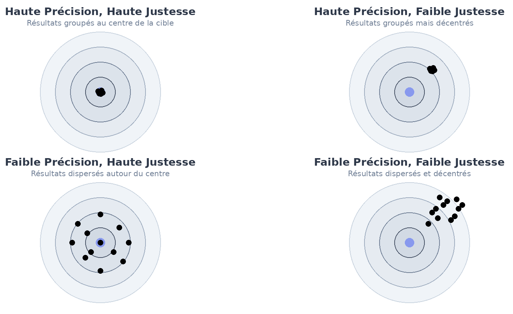
Traçabilité
Dès que le matériau in situ est identifié, une chaîne d’opérations s’amorce : prélèvement, identification, transport, entreposage, préparation, division, broyage et analyse en laboratoire. À chacune de ces étapes, des erreurs peuvent être introduites. Certaines sont aléatoires, mais plusieurs peuvent être systématiques, c’est-à-dire qu’elles tendent à déplacer les résultats toujours dans la même direction. C’est pourquoi un protocole rigoureux est nécessaire pour encadrer la manipulation des échantillons et documenter toutes les étapes du processus.
La traçabilité consiste à savoir exactement ce qui est arrivé à un échantillon, depuis son prélèvement sur le terrain jusqu’au résultat d’analyse. Chaque échantillon doit pouvoir être identifié et suivi tout au long de ces étapes, afin de rattacher son résultat à l’historique complet de sa manipulation.
Cette exigence peut sembler administrative, mais elle est essentielle. Un échantillon mal identifié, mélangé avec un autre ou mal préparé peut donner une teneur qui ne représente plus le matériau de départ. Dans ce cas, le problème ne vient pas du laboratoire : l’analyse peut être parfaitement réalisée, mais sur un échantillon qui n’est plus le bon ou qui a été modifié avant même d’y arriver. L’erreur se situe alors du côté du prélèvement et de la préparation, sous la responsabilité de la compagnie minière.
Les sources d’erreur possibles sont nombreuses. Elles peuvent provenir de la contamination par des poussières, de résidus dans les équipements, d’abrasion ou de corrosion. Elles peuvent aussi être liées à des pertes de matière, par exemple lorsque des fines sont emportées, lorsqu’une partie du matériau demeure dans le circuit de préparation ou lorsque le minéral d’intérêt est mal réparti après la division de l’échantillon. Certaines erreurs peuvent également modifier la composition chimique du matériau, notamment par oxydation.
Il y a aussi les erreurs humaines : une étiquette mal posée, un échantillon mélangé avec un autre, un équipement pas assez bien nettoyé. La plupart du temps, ce sont des erreurs involontaires. Plus rarement, il peut y avoir une action volontaire, comme une fraude ou un sabotage. C’est pour éviter ce genre de problème qu’on doit bien documenter les étapes et mettre en place des contrôles de qualité. C’est d’ailleurs la principale raison ayant mené à la création de la norme NI 43-101, adoptée à la suite du scandale Bre-X.
Sources d’erreurs
On distingue généralement quatre grandes catégories d’erreurs dans la chaîne menant à l’estimation des ressources minières :
| Grande classe | Erreurs associées | Effet principal | Moyens de contrôle |
|---|---|---|---|
| Précision | Erreur fondamentale (FSE) | Variabilité aléatoire liée à l’hétérogénéité du matériau | Formule de Gy, masse suffisante, réduction granulométrique |
| Biais | Délimitation, extraction, pondération, préparation, ségrégation | Échantillon systématiquement non représentatif | Protocoles, prévention, homogénéisation, traçabilité, contrôle qualité |
| Analyse | Erreur analytique (AE) | Erreur de mesure en laboratoire | Calibration, standards, duplicatas, blancs, QA/QC |
| Estimation | Hétérogénéités de longue portée et périodiques | Mauvaise représentation spatiale du gisement | Géostatistique, composites, variographie, plan d’échantillonnage adapté |
- Précision (Section 3.2)
Pour la précision, le problème vient surtout de l’erreur fondamentale d’échantillonnage. Même avec un bon protocole, on ne peut pas faire disparaître le fait que le matériau est hétérogène. Les teneurs changent d’un fragment à l’autre, les fragments n’ont pas tous la même taille, et on finit toujours par analyser seulement une petite partie du lot de départ. Cette variabilité peut être réduite, mais elle restera toujours présente.
Elle devient particulièrement importante lors des étapes de réduction de masse, telles que le concassage, le broyage ou la division, où seule une petite quantité de matériau est conservée pour l’analyse. Chaque étape peut donc introduire une incertitude qui s’accumule jusqu’au résultat final.
La théorie de Pierre Gy permet de modéliser et de quantifier ces erreurs en fonction des propriétés physiques du matériau et des méthodes de préparation employées.
- Biais (Section 3.1.4)
Les erreurs créant des biais regroupent les erreurs de délimitation, d’extraction, de pondération, de préparation et de ségrégation. Contrairement à l’erreur fondamentale, qui dépend surtout de l’hétérogénéité naturelle du matériau, ces erreurs sont principalement liées aux choix et aux pratiques d’échantillonnage sur le terrain. Elles relèvent donc directement du contrôle de l’ingénieur : définition du volume à prélever, méthode d’extraction, masse prélevée, homogénéisation, manutention, préparation et traçabilité.
Ces biais peuvent être évalués en comparant les résultats obtenus à partir de duplicatas et d’échantillons de contrôle. Sur le terrain, l’observation de la méthode de prélèvement, la vérification des masses, le contrôle des pertes de fines, la vérification de la constance des largeurs de rainure et la documentation des conditions de prélèvement permettent également d’identifier les sources potentielles de biais.
Ces erreurs doivent surtout être évitées dès le prélèvement. Une fois qu’un échantillon est mal délimité, incomplet ou mal documenté, il devient difficile de corriger le problème plus tard. Un protocole clair sert donc à limiter le risque de travailler avec un échantillon non représentatif.
- Analyse (Section 3.3)
Même avec un bon échantillon, il peut encore y avoir des erreurs au laboratoire. Le problème peut venir de la calibration des appareils, d’une contamination, de la méthode d’analyse ou d’une manipulation mal faite. Dans ce cas, l’échantillon est représentatif, mais la teneur mesurée peut quand même être faussée.
C’est pour cette raison que les programmes QA/QC sont essentiels. Les standards certifiés, les blancs, les duplicatas et les réanalyses permettent de vérifier si le laboratoire produit des résultats cohérents. Ils servent aussi à détecter une contamination, une dérive dans les mesures ou un problème de précision.
L’ingénieur ne contrôle pas directement chaque étape réalisée au laboratoire. Par contre, il doit s’assurer que les bons contrôles sont prévus, que le laboratoire est fiable et que les résultats QA/QC sont réellement examinés avant d’utiliser les données dans une estimation.
- Estimation (Chapitre 6 à 9)
Les erreurs d’estimation apparaissent plus tard, lorsque les données sont utilisées pour construire un modèle du gisement. À ce stade, le problème ne vient pas nécessairement d’un mauvais échantillon ou d’une mauvaise analyse. Il peut venir du fait que les données disponibles ne décrivent pas assez bien la variabilité réelle du gisement.
Par exemple, une tendance géologique peut être mal représentée, une limite entre deux domaines peut être placée au mauvais endroit, ou une alternance de veines et de lithologies peut être trop simplifiée dans le modèle. Dans ce cas, même avec des échantillons bien prélevés et bien analysés, l’estimation peut rester problématique si le modèle géologique ne respecte pas bien l’organisation du gisement.
Ces questions seront reprises plus loin dans le livre, notamment dans les chapitres consacrés à la modélisation spatiale : le variogramme, le krigeage et la simulation.
Les sources de biais et les méthodes d’échantillonnages
En contexte minier, une méthode d’échantillonnage correspond à l’ensemble des choix permettant de prélever une portion (ou un lot) de minerai ou de matériau afin d’en estimer les caractéristiques, notamment la teneur moyenne en éléments d’intérêt. Ce lot peut être une carotte, une face de galerie, des cuttings, un tas de minerai ou encore du matériau sur un convoyeur. On parle de biais lorsque l’échantillon ne représente pas fidèlement le lot que l’on souhaite caractériser.
Avant de présenter les principales méthodes d’échantillonnage, il est utile de rappeler les principales familles de biais susceptibles d’en affecter la qualité.
- Biais liés à l’opérateur
Ce type de biais provient directement de la personne qui prélève l’échantillon. Le problème apparaît lorsqu’on choisit, consciemment ou non, certains fragments plutôt que d’autres. Par exemple, on peut être tenté de choisir le matériau le plus visible, le plus facile à détacher ou celui qui semble le plus riche. Le résultat peut alors être un échantillon qui donne une image trop favorable ou simplement peu représentative du lot de départ.
- Biais liés aux dispositifs d’échantillonnage
Ces biais proviennent de l’outil de prélèvement lui-même. Un dispositif mal adapté récupère certains fragments plus facilement que d’autres — souvent au détriment des plus gros —, si bien que l’échantillon ne respecte plus les proportions du lot. Un tube trop étroit, une pelle trop petite ou un racleur mal conçu sur un convoyeur en sont des exemples typiques. Pour éviter ce biais, le dispositif doit donner à chaque fragment la même chance d’être prélevé, ce qui suppose de l’adapter au type de matériau, à la taille des fragments et à la façon dont le lot se présente.
- Biais liés aux propriétés mécaniques du matériau
Les différentes phases d’une roche ne se fragmentent pas de la même façon. Un minéral tendre ou ductile — l’or natif, la molybdénite, la galène — s’écrase et s’étale plutôt que de se casser : il peut adhérer aux outils, contaminer l’échantillon suivant (smearing) ou se perdre dans les fines. Une gangue dure ou cassante se brise au contraire en éclats susceptibles d’être projetés hors de l’échantillon. Comme l’élément d’intérêt est souvent porté par une phase distincte de la gangue, cette fragmentation différentielle enrichit ou appauvrit sélectivement l’échantillon en cet élément. Le biais dépend donc moins de la dureté globale de la roche que du comportement mécanique du minéral.
- Biais liés à la ségrégation granulométrique et à la densité des particules
Un lot fragmenté est rarement homogène : sous l’effet des vibrations, de la gravité et des courants d’eau ou d’air, les particules se réorganisent selon leur taille et leur densité. Les fines migrent vers le bas ou sont emportées, tandis que les grains grossiers et les minéraux lourds — souvent porteurs de l’élément d’intérêt, comme l’or natif ou la galène — se concentrent dans des zones distinctes. La composition varie alors d’un point à l’autre du lot. Prélever l’échantillon à un seul endroit revient dès lors à échantillonner une fraction non représentative : c’est l’erreur de ségrégation (ou de groupement) décrite par la théorie de Gy. Pour la limiter, on homogénéise le matériau avant le prélèvement, ou l’on constitue l’échantillon à partir de plusieurs incréments répartis sur l’ensemble du lot.
- Autres sources de biais
Certains biais dépendent directement de la minéralogie ou de la lithologie du gisement. Des minéraux solubles, comme certains sels ou sulfates, peuvent se dissoudre partiellement lors d’un forage à l’eau ou pendant l’entreposage, ce qui abaisse la teneur mesurée. À l’inverse, des minéraux denses comme l’or natif ou la galène tendent à se ségréger par gravité dans les cuttings ou la boue de forage, et se retrouvent alors sur- ou sous-représentés dans l’échantillon. Sur un affleurement, les lithologies plus tendres s’érodent plus vite et deviennent moins visibles : on risque de n’échantillonner que la roche résistante, plus dure, et donc de fausser la composition réelle. Ces biais n’obéissent pas à une règle générale; il faut les reconnaître selon le contexte du projet et adapter la méthode d’échantillonnage en conséquence.
Voici une liste non exhaustive de méthodes d’échantillonnage utilisées en contexte minier et des biais qui peuvent leur être associés. Les figures des sections suivantes sont tirées de l’article de Dominy et al. (2018), qui présente l’intégration de la théorie de l’échantillonnage dans les stratégies de contrôle des teneurs en mines souterraines. Elles s’appliquent aussi au mine à ciel ouvert.
Dominy, S., Glass, H., O’Connor, L., Lam, C., Purevgerel, S., & Minnitt, R. (2018). Integrating the Theory of Sampling into Underground Mine Grade Control Strategies. Minerals, 8(6), 232.
Méthode 1: Échantillonnage linéaire (Linear Sampling)
L’échantillonnage linéaire regroupe les méthodes qui prélèvent le matériau le long d’une ligne ou d’une bande tracée sur une face rocheuse. Selon la continuité du prélèvement et la surface couverte, on distingue l’échantillonnage par écaille, par cannelure et par panneau.
Méthode 1{,}1: Échantillonnage par écaille (Chip Sampling)
L’échantillonnage par écaille consiste à prélever une série d’éclats de roche le long d’une bande continue ou semi-continue, généralement à l’aide d’un marteau et d’un ciseau. Lorsque les éclats sont prélevés de façon discontinue, ils constituent plutôt une série d’échantillons ponctuels, qui s’apparentent davantage à des spécimens qu’à un échantillon représentatif.
Cette méthode est souvent utilisée lorsque la minéralisation est exposée sur une face rocheuse et que l’on souhaite obtenir une première estimation de la teneur sur une zone donnée. Comme le montre la Figure 3.2, le prélèvement peut suivre une ligne ou une bande tracée sur la paroi afin de guider l’échantillonnage et de limiter les variations dans la zone prélevée.
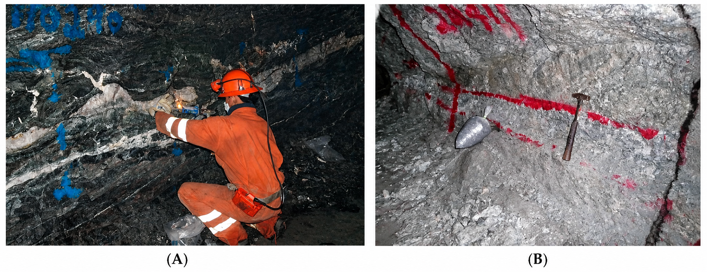
L’orientation de la bande d’échantillonnage doit être adaptée à la géologie. Selon la disposition du corps minéralisé, elle peut être horizontale, verticale ou perpendiculaire au pendage. La Figure 3.3 illustre cette logique : le filon de quartz subvertical est échantillonné horizontalement, tandis que les veinules plus plates du mur inférieur sont échantillonnées verticalement. L’objectif est de faire correspondre l’orientation de l’échantillon à la géométrie réelle de la minéralisation.
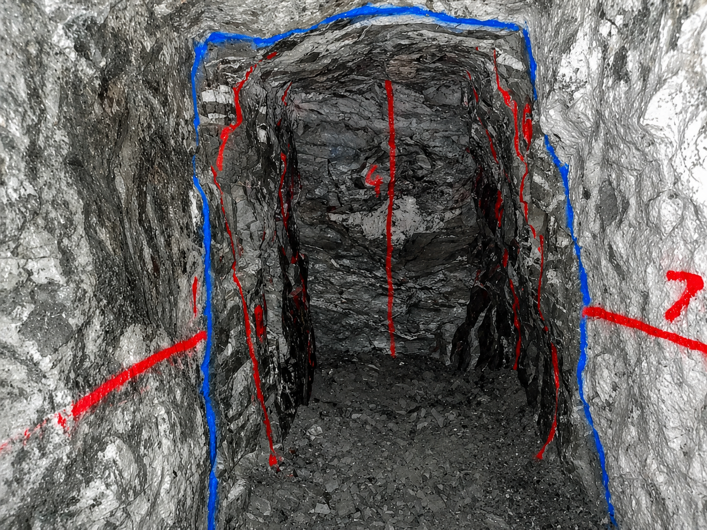
L’espacement entre les éclats peut varier selon la méthode utilisée. Les éclats peuvent être presque jointifs, formant alors une cannelure d’éclats, ou être séparés de plusieurs centimètres. Plus l’espacement est grand, plus l’échantillon risque de devenir ponctuel et moins il représente fidèlement l’ensemble de la bande minéralisée.
Risque : L’échantillonnage par éclats est sensible aux erreurs de délimitation et d’extraction. Ces biais peuvent être liés aux préférences de l’opérateur, à l’accessibilité des fragments ou aux variations de dureté de la roche. Par exemple, un opérateur peut, involontairement, privilégier les zones les plus visibles, les plus riches ou les plus faciles à détacher, ce qui peut produire un échantillon systématiquement non représentatif.
Méthode 1{,}2: Échantillonnage par cannelure (Channel Sampling)
L’échantillonnage par cannelure consiste à tailler une rainure continue dans la face rocheuse afin de prélever un échantillon représentatif de la zone minéralisée. Selon la géologie, cette rainure peut être orientée horizontalement, verticalement ou perpendiculairement au pendage du corps minéralisé. L’orientation doit donc être choisie en fonction de la géométrie de la minéralisation, plutôt que de la seule facilité de prélèvement.
Pour limiter les erreurs de délimitation et d’extraction, la cannelure doit conserver une largeur et une profondeur aussi constantes que possible. En général, elle mesure entre 5 et 10 cm de largeur et environ 2,5 cm de profondeur, ce qui permet d’obtenir un échantillon d’environ 3 à 6 kg par mètre.
En pratique, il est toutefois difficile de maintenir une rainure parfaitement uniforme lorsqu’elle est réalisée manuellement. Les variations de dureté de la roche, la fatigue de l’opérateur et la difficulté à conserver une profondeur constante peuvent altérer la qualité de l’échantillon. Dans certains cas, l’échantillonnage par cannelure manuelle se rapproche donc davantage d’un échantillonnage par éclats continus.
La Figure 3.4 illustre les principales étapes d’un échantillonnage par cannelure en mine souterraine : la réalisation de la rainure, la délimitation de la zone à prélever, le détachement du matériau et sa collecte dans un contenant propre.
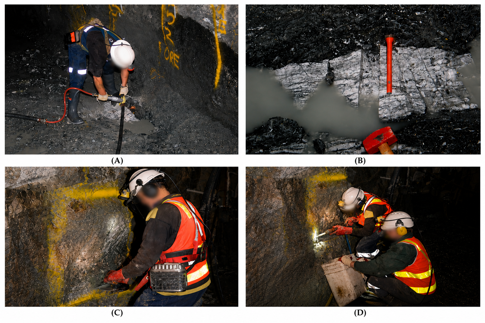
Certaines opérations utilisent une scie diamantée pour améliorer la qualité du prélèvement. Deux coupes parallèles sont alors réalisées dans la roche, généralement à une profondeur d’environ 2,5 cm et espacées de 5 à 10 cm. Le bloc de roche situé entre les deux coupes est ensuite extrait à l’aide d’un marteau et d’un ciseau, ou d’un outil pneumatique. Cette approche permet généralement de mieux contrôler la géométrie de l’échantillon que celle obtenue avec des cannelures entièrement réalisées à la main.
Risque : Les principaux biais associés à l’échantillonnage par cannelure sont les erreurs de délimitation et d’extraction. Une largeur ou une profondeur variable peut surreprésenter certaines lithologies, notamment les roches plus tendres, qui se détachent plus facilement que les roches dures. À l’inverse, les zones plus compétentes peuvent être sous-échantillonnées si elles sont difficiles à tailler. La perte de fines, la contamination par du matériau provenant des parois voisines ou une collecte incomplète du matériau peuvent également modifier la teneur mesurée. Ces biais doivent être limités par une cannelure bien délimitée, une profondeur constante, une récupération complète du matériau et un nettoyage adéquat de la zone de prélèvement.
Méthode 1{,}3: Échantillonnage d’un panneau (Panel Sampling)
L’échantillonnage d’un panneau consiste à prélever du matériau sur une surface délimitée de la face rocheuse, plutôt que le long d’une seule ligne comme dans le cas d’une cannelure. Le panneau est généralement tracé à la peinture sur la paroi afin de délimiter clairement la zone à échantillonner. Cette méthode est particulièrement utile lorsque la minéralisation est diffuse, irrégulière ou répartie dans plusieurs veinules sur une surface, plutôt que concentrée dans une structure linéaire.
Deux variantes peuvent être distinguées. Dans un échantillon de copeaux-panneau, seuls certains fragments sont prélevés à l’intérieur du panneau; la proportion de roche effectivement échantillonnée demeure alors limitée, souvent inférieure à 50 % de la surface. Dans un échantillon de panneau-canal, les fragments sont prélevés de manière plus continue sur l’ensemble de la surface du panneau; la proportion de roche échantillonnée est alors plus élevée et peut dépasser 50 %. Cette seconde approche est généralement plus représentative, mais elle demande plus de temps et un meilleur contrôle de la profondeur et de la récupération du matériau.
La Figure 3.5 illustre les principales étapes de cette méthode : la délimitation du panneau, le prélèvement du matériau sur la paroi, l’accumulation des fragments récupérés et l’utilisation d’une bâche ou d’un tapis pour limiter les pertes et la contamination.
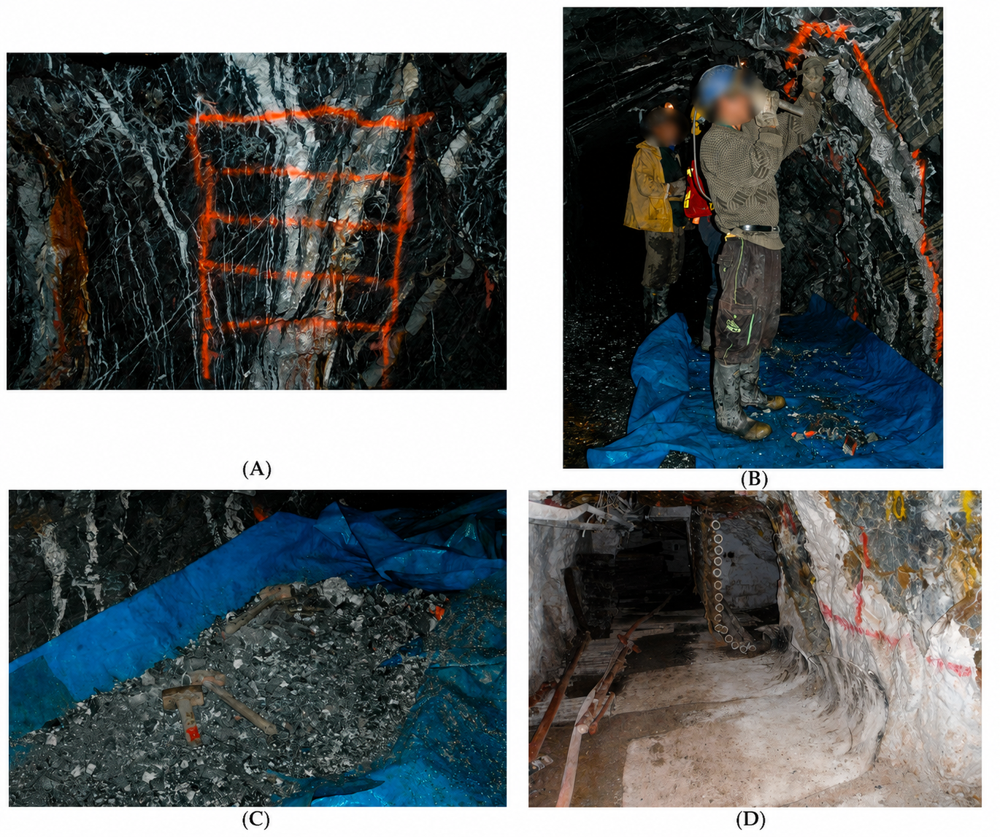
Risque :
L’échantillonnage par panneau est sensible aux erreurs de délimitation, d’extraction et de ségrégation. Un panneau mal défini peut exclure des zones minéralisées ou inclure trop de matériau stérile. De plus, les variations de dureté ou de fracturation peuvent entraîner une profondeur de prélèvement inégale : les roches tendres ou friables risquent d’être surreprésentées, tandis que les zones plus dures peuvent être sous-échantillonnées. La perte ou la contamination du matériau est aussi un risque important. Les fragments peuvent tomber au sol, se mélanger à des débris ou être contaminés par des poussières. L’utilisation d’une bâche ou d’un tapis propre permet de mieux récupérer le matériau et de limiter ces biais.
Méthode 2: Échantillonnage sur place ou en vrac (Grab Sampling)
L’échantillonnage sur place, ou grab sampling, consiste à prélever manuellement une ou plusieurs petites quantités de roche fragmentée dans un tas de minerai, un point de soutirage, une benne, un camion ou un wagonnet. Cette méthode est souvent utilisée pour le contrôle de teneur lorsque l’accès au front est difficile, lorsque les conditions de sécurité limitent l’échantillonnage direct ou lorsqu’aucune autre donnée n’est disponible. Elle permet d’obtenir rapidement une indication de la teneur, mais demeure peu représentative si elle n’est pas strictement encadrée.
La Figure 3.6 illustre un exemple d’échantillonnage ponctuel réalisé sur un tas de minerai en surface. Ce type de prélèvement est simple et rapide, mais il montre aussi la difficulté à représenter l’ensemble du volume à partir de fragments accessibles uniquement en surface. Les particules fines ou les fragments plus riches visuellement peuvent être surreprésentés, tandis que les blocs grossiers sont souvent ignorés.
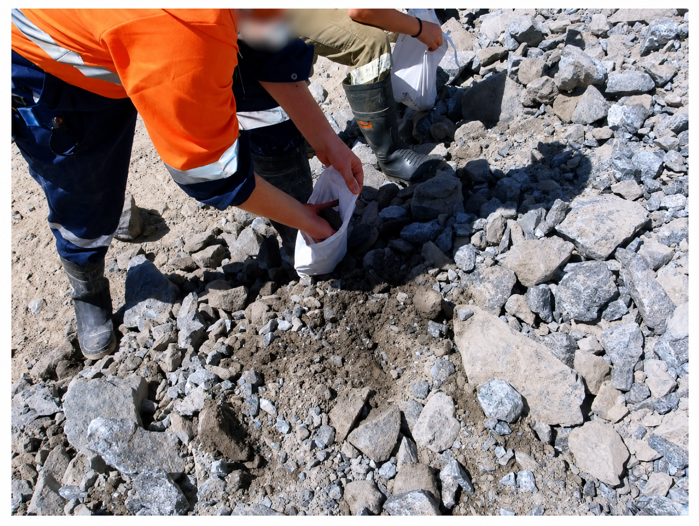
La Figure 3.7 présente un exemple de prélèvement à un point de soutirage, où une grille peut être utilisée pour répartir les prises sur la surface du tas. Cette approche améliore la couverture spatiale du prélèvement, mais ne permet pas d’échantillonner l’intégralité du volume du tas. L’échantillon demeure donc fortement influencé par la position des fragments visibles et accessibles.
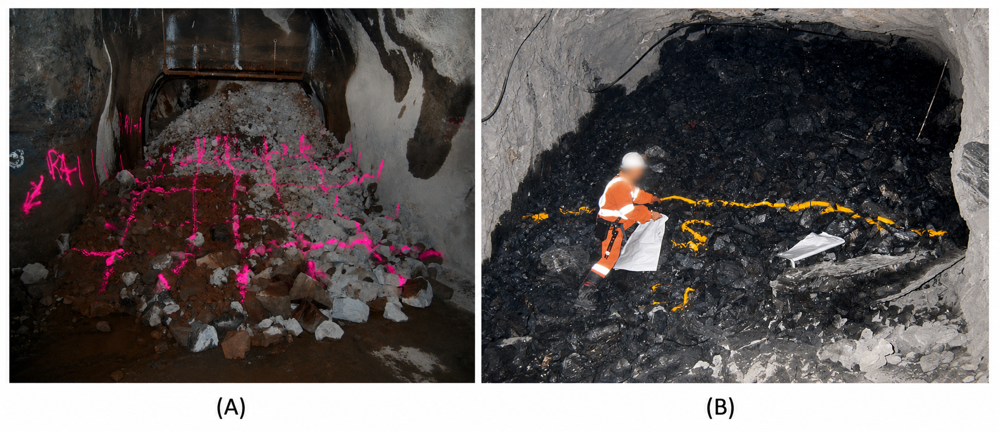
Risque : l’échantillonnage ponctuel est très sensible aux erreurs de délimitation, d’extraction, de ségrégation et à l’erreur fondamentale. Comme seuls quelques kilogrammes sont généralement prélevés pour représenter parfois plusieurs tonnes de minerai, l’échantillon peut être fortement biaisé. Les fines peuvent être enrichies en minéraux d’intérêt, les blocs grossiers peuvent être sous-échantillonnés, et l’opérateur peut involontairement choisir les fragments les plus visibles ou les plus minéralisés. Cette méthode doit donc être utilisée avec prudence, idéalement avec plusieurs prises réparties, une masse suffisante, des duplicatas et une caractérisation granulométrique.
Méthode 3: Échantillons de forage (Drilling Methods)
Les méthodes de forage permettent d’obtenir des échantillons en profondeur ou dans des zones difficilement accessibles par les méthodes de prélèvement direct. Elles sont généralement utilisées pour le contrôle des teneurs, la planification minière et la caractérisation géologique.
Méthode 3{,}1: Forage carotté au diamant (Diamond Core Drilling)
Les échantillons obtenus par forage au diamant sont généralement considérés comme parmi les plus fiables, surtout lorsque la récupération de la carotte dépasse 85 %. Une bonne récupération permet de limiter les erreurs de délimitation et d’extraction, tout en offrant une observation directe de la géologie, des structures et de la qualité du massif rocheux. La carotte peut également être orientée dans l’espace, ce qui facilite l’interprétation géologique en trois dimensions.
Dans les terrains fracturés ou instables, il peut toutefois être nécessaire d’utiliser des carottes de plus grand diamètre ou des techniques de forage à triple tube afin d’améliorer la récupération. Dans les terrains gonflants, l’utilisation de boues de forage adaptées peut aussi être requise. Malgré sa qualité, le forage au diamant fournit un volume d’échantillon relativement faible, par exemple d’environ 3 kg/m pour un diamètre BQ, et d’environ 15 kg/m pour un diamètre PQ. Dans les milieux très hétérogènes, cette faible masse peut rendre certains échantillons localement peu représentatifs.
Cette méthode demeure également plus lente et plus coûteuse que d’autres techniques de forage, ce qui peut en limiter l’utilisation lorsque des forages très rapprochés sont nécessaires. Elle reste néanmoins largement utilisée en mine pour le contrôle des teneurs, la caractérisation géologique et la planification à court et moyen terme.
Méthode 3{,}2: Forage à circulation inverse (Reverse Circulation Drilling)
Le forage à circulation inverse permet de prélever un volume d’échantillon plus important, généralement compris entre 35 et 45 kg/m, en moins de temps et à moindre coût. Les trous peuvent également être orientés perpendiculairement à la minéralisation, ce qui améliore la représentativité géométrique de l’échantillonnage. Les fragments produits sont généralement de petite taille et relativement homogènes.
Cette méthode présente toutefois certaines limites. Sur des terrains de mauvaise qualité, la récupération peut être insuffisante, ce qui accroît le risque d’erreur d’extraction. Les fragments de forage RC fournissent des informations utiles sur la teneur, mais ne permettent pas d’observer les structures géologiques avec le même niveau de détail qu’une carotte de forage.
Un point critique concerne le sous-échantillonnage du matériau récupéré. Même si le forage RC produit un bon échantillon primaire, une erreur fondamentale importante peut survenir si une fraction trop faible est prélevée pour l’analyse. Par exemple, prélever seulement 5 kg à partir d’un composite initial de 40 kg peut entraîner une incertitude élevée, surtout dans un minerai d’or grossier. L’analyse de duplicatas est donc une bonne pratique pour évaluer empiriquement la qualité du protocole RC.
Méthode 3{,}3: forage avec récupération des boues (Sludge Drilling)
Le forage avec récupération des boues ou des cuttings (sludge sampling ou blasthole drill sampling) consiste à forer des trous ouverts à l’aide d’un jumbo, d’une foreuse long trou ou d’une foreuse pneumatique, puis à récupérer les fragments produits dans des contenants ou des dispositifs placés sous le trou (Figure 3.8). La masse d’échantillon obtenue varie selon l’équipement utilisé, allant d’environ 2 kg/m pour les foreuses pneumatiques à près de 12 kg/m pour les foreuses long trou.
Traditionnellement, le matériau est collecté par longueur de tige, par exemple tous les 1,2 à 1,8 m. Dans certains cas, les cuttings peuvent également être récupérés sur un anneau complet de forage, ce qui peut entraîner la production de plusieurs tonnes de matériau primaire. Ce volume doit ensuite être réduit par fractionnement, soit sous terre, soit en surface, avant l’analyse. Cette étape de réduction est critique, car un sous-échantillon trop petit peut entraîner une erreur fondamentale importante.
Cette méthode présente toutefois plusieurs limites. La récupération complète du matériau est difficile, les fines peuvent être perdues et l’échantillon peut être contaminé par du matériau provenant des parois du trou. Les erreurs de délimitation, d’extraction et de préparation peuvent donc être importantes, surtout lorsque les fragments sont simplement ramassés au sol après le forage.
Le forage avec récupération des boues est surtout utilisé pour vérifier la position d’une zone minéralisée, confirmer que des trous de mine traversent le minerai ou obtenir une indication ponctuelle de la teneur. En raison de ses biais potentiels et de la qualité parfois faible des échantillons, cette méthode est rarement utilisée directement pour appuyer une estimation des ressources.
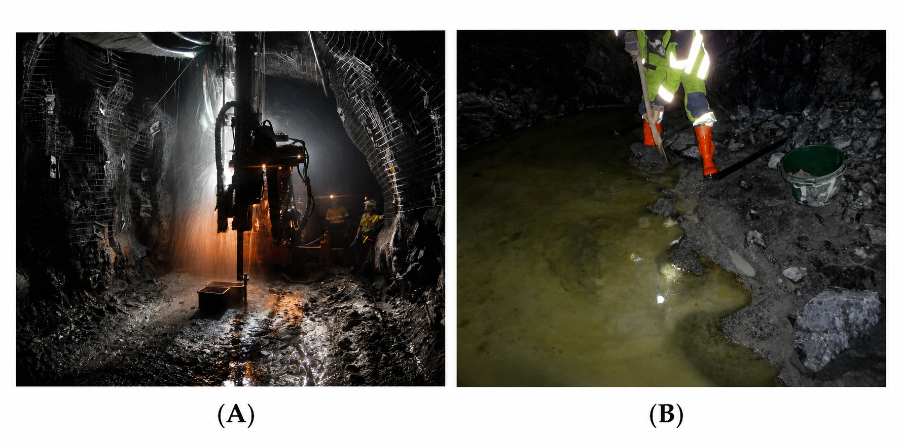
Méthode 4 : Autres méthodes d’échantillonnage
Certaines méthodes d’échantillonnage ne visent pas directement une face rocheuse ou une structure géologique précise, mais plutôt le minerai déjà abattu, transporté ou traité. Elles sont utiles pour le suivi de production, la réconciliation des teneurs ou le contrôle à l’entrée du concentrateur. Leur principale limite est qu’elles représentent souvent un flux ou un lot de production, plutôt qu’une position géologique précise dans le gisement.
Méthode 4{,}1 : Échantillonnage systématique de la production
L’échantillonnage systématique de la production consiste à prélever du minerai pendant le chargement du matériau abattu. Le prélèvement peut se faire à la pelletée, par exemple une pelletée toutes les n pelletées, ou encore par wagonnet, en sélectionnant certains wagonnets qui sont ensuite vidés sur une aire réservée.
Cette méthode permet d’obtenir une estimation de la teneur du minerai extrait, mais elle dépend fortement de l’homogénéité du matériau abattu. Après un tir, le minerai ne se mélange pas toujours de façon uniforme : certaines portions de la volée peuvent être plus riches ou plus pauvres que d’autres. La teneur peut donc varier fortement d’un wagonnet à l’autre. De plus, la position du minerai dans la volée influence la granulométrie et la composition du matériau échantillonné.
Risque : Le principal risque est d’obtenir un échantillon qui représente seulement une partie du tir ou du chargement. Une distribution non homogène du minerai peut entraîner une surreprésentation ou une sous-représentation de certaines zones, notamment si le protocole de prélèvement n’est pas strictement systématique.
Méthode 4{,}2 : Échantillonnage de convoyeur (Conveyor Belt Sampling)
L’échantillonnage de convoyeur consiste à prélever automatiquement une portion du minerai transporté sur une courroie. Cette méthode permet d’échantillonner un flux de matériau en continu ou à intervalles réguliers. Elle est particulièrement utile pour estimer la teneur moyenne de grands volumes de minerai ou pour contrôler la teneur à l’entrée du concentrateur.
Lorsqu’il est bien conçu, un système d’échantillonnage sur convoyeur peut être très représentatif du flux de production, car il intercepte une partie du matériau en mouvement. Il est toutefois moins utile pour relier une teneur à une position précise dans le gisement, puisque le minerai transporté peut provenir de plusieurs fronts, chantiers ou zones de production.
Risque : La principale limite est la perte d’information spatiale. La provenance exacte de l’échantillon est souvent difficile, voire impossible, à déterminer. Cette méthode est donc pertinente pour le contrôle global du flux de minerai, mais moins adaptée à la caractérisation géologique détaillée du gisement.
Méthode 4{,}3 : Analyseurs en continu (On-stream Analyzers)
Les analyseurs en continu mesurent la composition du minerai directement dans le flux de production, souvent à l’entrée du concentrateur. Ils utilisent différentes propriétés physiques ou chimiques, par exemple des sondes gamma-gamma, des méthodes électromagnétiques ou la fluorescence X. Leur principal avantage est de fournir une information rapide et continue sur la teneur du minerai.
Ces instruments sont utiles pour le suivi en temps réel des procédés, l’ajustement des opérations et le contrôle de la qualité du minerai alimentant l’usine. Ils ne remplacent toutefois pas complètement les analyses de laboratoire, car leur réponse dépend des conditions de mesure, de la granulométrie, de l’humidité, de la calibration et de la position du minerai par rapport à la sonde.
Risque : Les principaux biais proviennent de la position du minerai dans le flux, de la granulométrie, de l’humidité et des variations de composition du matériau. Le signal mesuré peut différer selon que les particules sont en surface ou en profondeur. Des recalibrations régulières sont donc nécessaires pour maintenir la fiabilité des mesures.
3.2 Théorie de l’échantillonnage des matières morcelées
La théorie de l’échantillonnage des matières morcelées quantifie l’erreur fondamentale, celle qui naît de l’hétérogénéité du lot. Même avec un bon protocole, le matériau n’est jamais parfaitement homogène : les fragments n’ont pas tous la même taille ni la même teneur. C’est cette variabilité résiduelle qui produit l’erreur fondamentale d’échantillonnage.
C’est précisément cette incertitude que la théorie de l’échantillonnage des matières morcelées cherche à quantifier. Pierre Gy, ingénieur des mines, a abordé le problème de l’échantillonnage sous un angle statistique. Il a développé une formule permettant d’estimer la précision relative d’un échantillon représentant un lot donné, en fonction de la taille des fragments, de la masse de l’échantillon et du lot, ainsi que de différents paramètres minéralogiques et granulométriques.
Cette théorie permet donc de passer d’une approche principalement qualitative de l’échantillonnage — identifier les biais et les méthodes à risque — à une approche quantitative, où l’on peut estimer l’erreur attendue et ajuster la masse ou la préparation de l’échantillon en conséquence. La présentation retenue ici est simplifiée pour le cours; les ouvrages de référence en donnent le développement complet.
Gy, P. (1982). Sampling of Particulate Materials: Theory and Practice (2e éd.). Elsevier.
Échantillon probabiliste
La formule de Gy permet d’estimer la précision relative d’un échantillon. Mais pour que ce calcul ait un sens, l’échantillon doit être probabiliste. Cela veut dire que chaque fragment du lot doit avoir une chance d’être inclus dans l’échantillon final. Si certains fragments ne peuvent pas être prélevés dès le départ, l’échantillonnage n’est plus probabiliste : la formule de Gy ne s’applique alors plus, car elle ne décrit que l’erreur d’un prélèvement associé à un échantillonnage probabiliste sans biais.
Un échantillon probabiliste est un échantillon dans lequel chaque élément du lot a une probabilité non nulle d’être sélectionné.
L’échantillonnage est considéré comme non biaisé lorsque tous les fragments ont la même probabilité d’être sélectionnés.
La Figure 3.9 illustre cette distinction. Dans un échantillonnage déterministe, une portion précise de la carotte est sélectionnée selon un choix imposé, par exemple parce qu’elle semble plus minéralisée, plus accessible ou plus intéressante visuellement. Ce type de sélection peut introduire un biais important, car certaines parties de la carotte n’ont aucune chance d’être analysées. À l’inverse, dans un échantillonnage probabiliste, chaque fragment de la carotte peut, en principe, contribuer à l’échantillon final.
En pratique, on envoie souvent une demi-carotte à l’analyse et on conserve l’autre moitié en carothèque. Cette moitié peut servir plus tard pour vérifier les observations, refaire certaines analyses ou réaliser d’autres essais si nécessaire.
De plus en plus de compagnies numérisent aujourd’hui les carottes à l’aide de photographies en haute résolution, d’imagerie géophysique ou d’autres méthodes d’acquisition numérique. Ces approches facilitent l’archivage et peuvent réduire les contraintes d’entreposage. Elles ne remplacent toutefois pas entièrement l’échantillon physique : l’observation directe d’une carotte par une personne expérimentée demeure importante, notamment pour interpréter les textures, les structures et certains détails géologiques difficiles à automatiser.
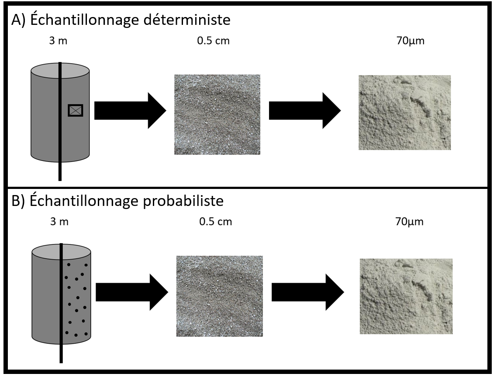
Équation de Gy
Soit un certain lot de minerai, par exemple, une demi-carotte de forage. Supposons que l’on concasse cette carotte jusqu’à ce que la taille des plus gros fragments soit de \(d\) (en cm). On définit \(d = d_{5\%}\) comme la taille du tamis qui retient uniquement les 5 % des fragments les plus gros, c’est-à-dire ceux qui représentent 5 % du poids total du lot.
Si l’on prélève un échantillon de masse \(M_e\) (habituellement faible en rapport avec la masse \(M_L\) du lot qu’il représente), alors la variance relative (sans unité) de l’erreur d’échantillonnage, \(s_r^2\), peut s’écrire comme suit :
\[ s_r^2 = \frac{s^2}{a_L^2} = K\,l\,\frac{d^3}{M_e} \left(1 - \frac{M_e}{M_L} \right) \approx K\,l\,\frac{d^3}{M_e} \tag{3.1}\]
où \(M_e\) est la masse de l’échantillon, en grammes. \(M_L\) est la masse du lot échantillonné, généralement beaucoup plus grande que \(M_e\), également exprimée en grammes. \(l\) est le facteur de libération, sans unité. \(K\) est une constante dont l’unité est \(\text{g/cm}^3\). \(a_L\) est la concentration du constituant d’intérêt (exprimée en fraction)
Physiquement, l’erreur décrite par cette équation provient du caractère aléatoire de la sélection d’un nombre fini de fragments. La taille des fragments intervient au cube (\(d^3\)) parce que la masse d’un fragment croît comme le cube de son diamètre : un gros fragment porte à lui seul une part importante du métal, de sorte que le prendre ou le laisser modifie fortement la teneur de l’échantillon. Concasser plus finement — c’est-à-dire réduire \(d\) — réduit l’erreur de façon très marquée. À l’inverse, augmenter la masse de l’échantillon \(M_e\) revient à prélever davantage de fragments, dont les fluctuations individuelles se moyennent : la variance décroît comme \(1/M_e\), comme pour une moyenne en fonction du nombre d’observations.
Le facteur de libération \(l\), compris entre 0 et 1, mesure le degré de libération du minéral d’intérêt dans la gangue. Lorsqu’il forme des grains distincts (\(l \to 1\)), sa teneur varie fortement d’un fragment à l’autre et l’erreur est maximale; lorsqu’il est finement disséminé dans la roche (\(l \to 0\)), tous les fragments ont une teneur voisine et l’erreur devient faible. Le terme \((1 - M_e/M_L)\) n’est qu’une correction de population finie, négligeable dès que l’échantillon est petit devant le lot, tandis que la constante \(K\) regroupe les propriétés du matériau, indépendantes de la masse prélevée : forme des fragments, étalement granulométrique, densité et teneur en minéral.
À noter que l’approximation n’est valable que lorsque \(M_e \ll M_L\).
Détermination du facteur de libération \(l\)
La valeur du facteur de libération \(l\) est donnée par :
\[ l = \begin{cases} 1, & \text{si } d \leq d_0 \\ \left( d_0/d \right)^{0{,}5}, & \text{si } d > d_0 \end{cases} \tag{3.2}\]
où \(d_0\) représente la taille à laquelle le constituant d’intérêt est entièrement libéré de la gangue. Il s’agit, par exemple, de la taille à laquelle l’or disséminé dans la pyrite devient natif. L’or est alors entièrement libéré de la pyrite. Remarque, le facteur \(l\) est sans unité.
En pratique, la taille de libération \(d_0\) se déduit de l’observation minéralogique du minerai, par exemple à l’aide de la microscopie ou de la minéralogie automatisée; les laboratoires fournissent souvent cette information. La forme \(l = \left( d_0/d \right)^{0{,}5}\) retenue ici est l’expression classique de Gy; des formulations révisées du facteur de libération ont depuis été proposées (François-Bongarçon et Gy, 2001).
Détermination de la constante \(K\)
La constante \(K\) regroupe plusieurs facteurs et peut s’écrire comme :
\[K = f \cdot g \cdot (\mu\delta) \tag{3.3}\]
avec \(f\) un facteur de forme, défini comme le rapport du volume d’un fragment au volume du plus petit cube qui le contient entièrement. \(f\) est sans dimension. \(g\) est un facteur de distribution décrivant l’uniformité de la taille des fragments et donc lié à la courbe granulométrique. \(g\) est sans unité. \((\mu\delta)\) est un paramètre qui combine les effets de la teneur et des masses spécifiques du minéral. \(\mu\delta\) est exprimée en unités de masse spécifique (\(\text{g/cm}^3\)).
Détermination du facteur de forme
Le facteur de forme \(f\) est le rapport entre le volume d’un fragment et celui du plus petit cube qui le contient entièrement. Par exemple, pour un fragment sphérique de diamètre 1 cm, le plus petit cube qui peut contenir cette sphère a un côté de 1 cm. Le volume de la sphère est alors \(\frac{4\pi r^3}{3} = \frac{4\pi \cdot 0{,}5^3}{3} \approx 0{,}524 \,\text{cm}^3\), tandis que le volume du cube est de 1 \(\text{cm}^3\), ce qui donne \(f \approx 0{,}524\).
Pour un minéral fibreux (comme l’amiante) ou tabulaire (par exemple le mica), le facteur de forme est beaucoup plus faible, généralement compris entre \(f = 0{,}1\) et \(f = 0{,}2\).
Après de nombreuses analyses en laboratoire sur divers minéraux, une valeur recommandée pour la plupart des minerais est \(f = 0{,}5\). Il convient toutefois de noter que ce n’est pas une règle universelle, et qu’il est préférable de consulter la littérature pour identifier le facteur approprié au matériau étudié.
Par souci de simplicité, nous utiliserons ici systématiquement la valeur : \[ f = 0{,}5 \tag{3.4}\]
Détermination du facteur de distribution
Le facteur de distribution \(g\) mesure l’uniformité de la courbe granulométrique. Il peut être estimé à partir des diamètres caractéristiques de la distribution, soit \(d_{5\%}\) et \(d_{95\%}\), selon la règle suivante : \[g = \begin{cases} 0{,}25, & \text{si aucune calibration n'est effectuée} \\ 0{,}40, & \text{si } \frac{d_{95\%}}{d_{5\%}} > 4 \\ 0{,}50, & \text{si } 4 > \frac{d_{95\%}}{d_{5\%}} > 2 \\ 0{,}75, & \text{si } 2 > \frac{d_{95\%}}{d_{5\%}} > 1 \\ 1{,}00, & \text{si } \frac{d_{95\%}}{d_{5\%}} = 1 \end{cases}\]
Cependant, la calibration précise des courbes granulométriques est relativement rare dans les laboratoires miniers en raison du temps et des coûts qu’elle implique. Une compagnie minière peut devoir faire analyser plusieurs milliers de carottes, et elle ne dispose généralement pas du temps ni des ressources nécessaires pour établir une courbe granulométrique détaillée pour chaque échantillon afin d’estimer précisément le facteur \(g\).
D’ailleurs, l’utilisation du \(d_{5\%}\) dans la formule de Gy n’est pas anodine. De nombreuses analyses expérimentales ont été menées en laboratoire pour établir une corrélation entre la distribution granulométrique et le facteur de distribution (Figure 3.10). Il a été observé que, pour un grand nombre d’échantillons, la valeur du facteur \(g\) tend à se rapprocher de 0{,}25 lorsqu’on utilise \(d_{5\%}\) dans les calculs. Ainsi, pour des raisons de simplicité et d’efficacité, nous adopterons systématiquement, dans nos calculs, la valeur : \[ g = 0{,}25 \tag{3.5}\]
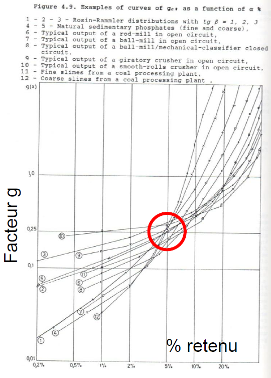
Détermination du facteur \((\mu\delta)\)
Le facteur \(\mu\delta\) est un paramètre qui combine les effets de la teneur et des masses spécifiques. Il est défini comme : \[ \mu\delta = \frac{1-a_L}{a_L} \Big[(1-a_L)\delta_a + a_L\delta_g \Big] \tag{3.6}\]
où \(\delta_a\) désigne la masse spécifique du constituant d’intérêt et \(\delta_g\) celle de la gangue (toutes deux en \(\text{g/cm}^3\)), et \(a_L\) la concentration du constituant d’intérêt, exprimée en fraction (10 % = 0{,}10, 10 ppm = 0{,}00001).
La gangue est constituée de toute la matière qui n’est pas le constituant d’intérêt.
Le constituant d’intérêt est le minéral qui contient le métal recherché. Par exemple : pour le cuivre : la chalcopyrite (CuFeS2); pour le zinc : la sphalérite (ZnS); pour l’or : la pyrite (FeS2), ou parfois l’or natif.
Exemple : Soit une analyse indiquant une teneur en cuivre (Cu) de 5 %. Le cuivre provient de la chalcopyrite, de formule CuFeS2. La valeur de \(a_L\) doit donc représenter la fraction massique de chalcopyrite, et non celle de cuivre. Il faut donc convertir la teneur en cuivre en teneur équivalente en chalcopyrite, en utilisant les masses molaires.
La masse molaire de la chalcopyrite est donnée par : \[M_{\text{CuFeS}_2} = M_{\text{Cu}} + M_{\text{Fe}} + 2\,M_{\text{S}} = 63{,}5 + 55{,}8 + 2 \times 32{,}1 = 183{,}5~\text{g/mol}.\]
Le rapport massique du cuivre dans la chalcopyrite est donc : \[\frac{M_{\text{Cu}}}{M_{\text{CuFeS}_2}} = \frac{63{,}5}{183{,}5} \approx 0{,}35.\]
Ainsi, une teneur de 5 % en cuivre correspond à une teneur de : \[a_L = \frac{5~\%}{0{,}35} \approx 14~\% \quad \text{de chalcopyrite}.\]
Cette valeur est utilisée pour le calcul du facteur \(\mu\delta\).
Cette relation est vraie uniquement si le cuivre n’est présent que dans la chalcopyrite.
🧮 Atelier interactif 3.1 — Calculateur de la théorie de Gy
Ce calculateur permet d’estimer l’erreur fondamentale d’échantillonnage pour un seul échantillon à partir des paramètres de la théorie de Gy. En modifiant les caractéristiques du lot, du matériau et de l’échantillon, vous pouvez observer en temps réel l’effet de ces paramètres sur la variance d’échantillonnage.
Il s’agit également d’un outil de validation que vous pouvez utiliser pour vérifier vos calculs et vous accompagner dans la résolution des exercices.
Cet outil n’est manipulable que dans la version web de ce document.
Exemples d’application
Exemple 1 - Mine de Murdochville
La mine de Murdochville fait sauter chaque semaine un volume d’environ \(60\,\text{m} \times 40\,\text{m} \times 10\,\text{m}\). Le minerai est contenu dans la chalcopyrite, dont la masse spécifique est de \(4{,}2\,\text{g/cm}^3\), tandis que celle de la roche encaissante, la gangue, est de \(3\,\text{g/cm}^3\). Les plus gros blocs résultant du sautage ont un diamètre d’environ \(0{,}5\,\text{m}\). On déverse le minerai dans un concasseur qui réduit la taille des blocs à environ \(10\,\text{cm}\). La taille de libération de la chalcopyrite est d’environ \(1\,\text{mm}\). La teneur du volume sauté devrait se situer entre 1 % et 5 % de Cu.
Problème : Quelle masse d’échantillon la mine devrait-elle prélever pour connaître, avec une précision relative de \(20\,\%\) (i.e. \(s_r/a_L = 0{,}2\)), la teneur en cuivre du volume sauté, dans les deux cas suivants :
échantillonnage directement au chargeur, avant le concassage;
échantillonnage après le concassage, sur le convoyeur menant au concentrateur.
Solution
Nous supposons que \(M_e \ll M_L\) et utilisons la formule simplifiée.
a) Échantillonnage avant le concassage
On pose : \[f = 0{,}5, \quad g = 0{,}25, \quad d = 0{,}5\,\text{m}, \quad l = \left( \frac{1\,\text{mm}}{500\,\text{mm}} \right)^{0{,}5} \approx 0{,}0447\]
La teneur en chalcopyrite est estimée entre : \[a_L = \frac{1\,\%}{0{,}35} \approx 2{,}86\,\%, \quad \text{et} \quad a_L = \frac{5\,\%}{0{,}35} \approx 14{,}3\,\%\]
En substituant dans l’expression du facteur \(\mu\delta\), on trouve : \[\mu\delta \in [24{,}1, \, 141{,}5]\]
On impose une précision relative \(s_r = 0{,}2 \Rightarrow s_r^2 = 0{,}2^2 = 0{,}04\). En remplaçant dans la formule de variance :
\[0{,}04 = \mu\delta \cdot l \cdot f \cdot g \cdot \frac{d^3}{M_e}\]
\[M_e = \mu\delta \cdot l \cdot f \cdot g \cdot \frac{d^3}{0{,}04} = \mu\delta \cdot 0{,}0447 \cdot 0{,}5 \cdot 0{,}25 \cdot \frac{0{,}5^3}{0{,}04} \Rightarrow M_e \in [421\,\text{kg},\,2470\,\text{kg}]\]
b) Échantillonnage après le concassage
Seuls \(d\) et \(l\) changent :
\[d = 0{,}1\,\text{m}, \quad l = \left( \frac{1\,\text{mm}}{100\,\text{mm}} \right)^{0{,}5} = 0{,}1\]
\[M_e = \mu\delta \cdot 0{,}1 \cdot 0{,}5 \cdot 0{,}25 \cdot \frac{0{,}1^3}{0{,}04} \Rightarrow M_e \in [7{,}5\,\text{kg},\,44\,\text{kg}]\]
On constate donc qu’il est beaucoup plus économique d’échantillonner sur le convoyeur que d’échantillonner aux points de soutirage de la mine. De plus, lors de l’échantillonnage au soutirage, les fragments les plus gros ne peuvent être retenus, ce qui introduit un biais dans la méthode et affecte à la fois la teneur estimée et la variance d’échantillonnage. L’échantillonnage aux points de soutirage comporte également un risque opérationnel, puisqu’il peut interférer avec la production minière.
Exemple 2 - Gisement d’or disséminé
Dans un gisement d’or, l’or est disséminé et emprisonné dans la structure de la pyrite (densité de la pyrite : 5; densité des roches volcaniques : 3). On prélève des carottes de 1 mètre que l’on divise en deux demi-carottes. On broie ensuite une demi-carotte en fragments de 2,5 mm et on prélève environ 100 g pour analyse. La procédure est-elle adéquate si la demi-carotte présente une teneur en or de 5 ppm, avec une taille de libération de la pyrite \(d_0 = 0{,}1\) mm, un facteur de forme \(f = 0{,}5\), un facteur de distribution \(g = 0{,}75\) et une concentration moyenne de 50 ppm d’or dans la pyrite?
Solution: Comme l’or n’est pas libre mais entièrement contenu dans la pyrite, c’est la pyrite qui joue le rôle de constituant d’intérêt dans la formule de Gy : les grains d’or accompagnent les grains de pyrite lors du prélèvement, et c’est donc la libération de la pyrite qui gouverne l’erreur. Il faut alors connaître la proportion de pyrite dans la roche.
Or, l’or présente en moyenne 50 ppm dans la pyrite. Si la roche entière ne contient que 5 ppm d’or, c’est qu’elle renferme une fraction de pyrite égale à \(a_L = 5/50 = 0{,}1\), soit 10 % de pyrite en masse. C’est cette valeur que l’on introduit dans le calcul :
\[\mu\delta = 43{,}2, \quad \text{avec} \quad a_L = 0{,}1,\ \delta_a = 5,\ \delta_g = 3\]
On a également :
\[l = (0{,}1/2{,}5)^{0{,}5} = 0{,}2, \quad f = 0{,}5, \quad g = 0{,}75.\]
En appliquant la formule de la précision relative (\(s_r^2\)) :
\[s_r^2 = \frac{43{,}2 \times 0{,}2 \times 0{,}5 \times 0{,}75 \times 0{,}25^3}{100} = 0{,}0005\]
d’où :
\[s_r = \sqrt{s_r^2} = \sqrt{0{,}0005} = 0{,}02\]
La procédure est excellente : elle permet une précision de l’ordre de 2 %.
Exemple 3 - Gisement d’or natif
Reprenons le même gisement qu’à l’exemple 2, mais supposons cette fois que l’or se présente sous forme native (pépites et paillettes), avec une taille de libération de 0,01 mm. La procédure de prélèvement reste la même (broyage à 2,5 mm, 100 g analysés). Est-elle toujours adéquate?
Cette fois, l’or n’est plus emprisonné dans la pyrite : il forme ses propres grains. Le constituant d’intérêt est donc l’or lui-même, et sa concentration dans la roche entre directement dans la formule, soit \(a_L = 5\ \text{ppm} = 5 \times 10^{-6}\) (au lieu des 10 % de pyrite de l’exemple précédent).
Comme \(a_L\) est très petit, le facteur minéralogique se simplifie en \(\mu\delta \approx \delta_a / a_L\) :
\[\mu\delta \approx \frac{19}{5 \times 10^{-6}} = 3{,}8 \times 10^6 \qquad (\delta_a = 19 : \text{densité de l'or})\]
Le facteur de libération vaut \(l = (0{,}001/0{,}25)^{0{,}5} = 0{,}063\); l’or se présentant en paillettes, on pose un facteur de forme \(f = 0{,}2\), et le facteur de distribution reste \(g = 0{,}75\).
En appliquant la formule de la précision relative :
\[s_r^2 = \frac{3{,}8 \times 10^6 \times 0{,}063 \times 0{,}2 \times 0{,}75 \times 0{,}25^3}{100} = 5{,}61\]
\[s_r = \sqrt{5{,}61} = 2{,}37\]
La procédure est cette fois inadéquate. Avec un écart-type relatif de l’ordre de 237 %, la teneur mesurée se situera approximativement entre 0 et 30 ppm dans 95 % des cas, alors que la vraie teneur est de 5 ppm. À teneur identique, le simple fait que l’or soit natif plutôt qu’inclus dans la pyrite rend l’échantillonnage beaucoup plus difficile : c’est l’effet pépite. Pour retrouver une précision acceptable, il faudrait analyser toute la demi-carotte, ou broyer bien plus finement que 2,5 mm avant de prélever les 100 g. Nous verrons graphiquement comment poser ce type de diagnostic.
Procédures multistages
Les procédures d’échantillonnage nécessitent presque toujours plusieurs étapes successives de broyage et d’échantillonnage. Par exemple, une demi-carotte peut être broyée à 2{,}5 mm, puis un sous-échantillon de 100 g est prélevé. Ce dernier est ensuite broyé à 0{,}5 mm, puis un prélèvement de 30 g est broyé à 0{,}1 mm, avant de prélever un dernier sous-échantillon de 5 g destiné à l’analyse.
On reconnaît ainsi trois étapes de broyage (2{,}5 mm, 0{,}5 mm et 0{,}1 mm) et trois étapes de sous-échantillonnage (100 g, 30 g et 5 g). Chaque étape de sous-échantillonnage introduit une erreur d’échantillonnage, dont on peut calculer la variance à l’aide des équations présentées précédemment. Ces sous-échantillonnages étant réalisés de manière indépendante, les erreurs associées sont également indépendantes. Par conséquent, les variances relatives s’additionnent — ce point mérite d’être souligné, car ce sont bien les variances qui s’additionnent, et non les écarts-types. Or, la formule de Gy fournit un écart-type relatif. Il ne faut donc pas oublier de convertir les écarts-types en variances avant de les additionner.
Dans une procédure d’échantillonnage, c’est donc le maillon faible — c’est-à-dire l’étape de sous-échantillonnage générant la plus grande erreur — qui sera responsable de la majorité de la variance totale de l’erreur. Il est essentiel d’identifier ce maillon faible afin d’apporter les ajustements nécessaires et améliorer la représentativité de l’échantillon.
Sur un graphique où l’on porte en abscisse (x) la taille des plus gros fragments (\(d\)) et en ordonnée (y) la masse de l’échantillon (\(M_e\)), on peut représenter chaque étape de concassage ou de broyage par un segment horizontal, et chaque étape de sous-échantillonnage par un segment vertical. Il est possible de superposer à ce graphique les courbes de variance relative correspondant à chaque taille et chaque masse d’échantillon (voir section suivante). Cela permet de détecter aisément les étapes critiques nécessitant des améliorations afin d’obtenir un échantillon plus représentatif.
Représentation graphique
Les facteurs ayant le plus d’influence sur la variance d’échantillonnage sont nettement la taille des plus gros fragments (\(d\)) et la masse de l’échantillon (\(M_e\)). Sur des échelles log-log, la variance d’échantillonnage varie linéairement avec la taille des fragments et la masse de l’échantillon.
On peut ainsi construire une série de droites sur ce graphique, ayant une pente de 3 lorsque \(d < d_0\) et de 2{,}5 lorsque \(d > d_0\), ces droites représentant des configurations assurant une variance d’échantillonnage constante à chaque étape d’un sous-échantillonnage.
La Figure 3.11 présente des isocontours (i.e., des plages de valeur pour \(M_e\) et \(d\) qui fournissent le même écart-type relatif \(s_r\)) pour les paramètres suivants : \(M_L = 10\,000\) g, \(d_0=0{,}04\) cm, \(\delta_g=2{,}8\), \(\delta_a=5\), \(f=0{,}5\), \(g=0{,}5\), \(a_L=0{,}03\).
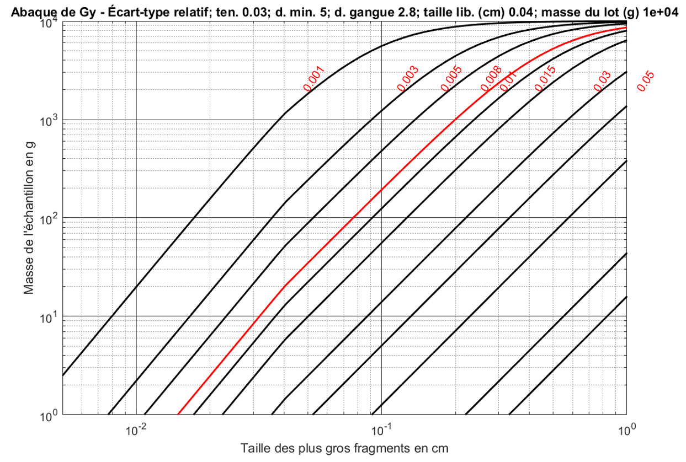
À partir de cette représentation graphique, il est facile, lorsqu’on connaît la procédure d’échantillonnage en plusieurs étapes (multistage), de la représenter et d’observer visuellement, sans calcul, si elle est adéquate.
Par exemple, considérons l’analyse d’une carotte de 10 000 g (\(M_L = 10\ 000\)). Trois étapes successives de concassage et de broyage sont réalisées pour réduire la taille des fragments à \(d = 0{,}5\) cm, puis à \(d = 0,02\) cm, et finalement à \(d = 0{,}007\) cm. À chaque étape, une fraction du lot est prélevée : 5300 g lors de la première étape, 100 g lors de la deuxième, et enfin 25 g lors de l’analyse finale.
La Figure 3.12 illustre cette procédure. On part du point A avec une carotte de 10 000 g broyée à une taille de 0,5 cm. On prélève alors 5300 g, ce qui nous amène verticalement au point B. Ce lot est ensuite broyé à une taille de 0,02 cm, nous plaçant au point C. À partir de là, 100 g sont échantillonnés, ce qui nous mène au point D. Ces 100 g sont alors broyés à une taille de 0,007 cm (point E), puis un échantillon final de 25 g est prélevé pour l’analyse (point F).
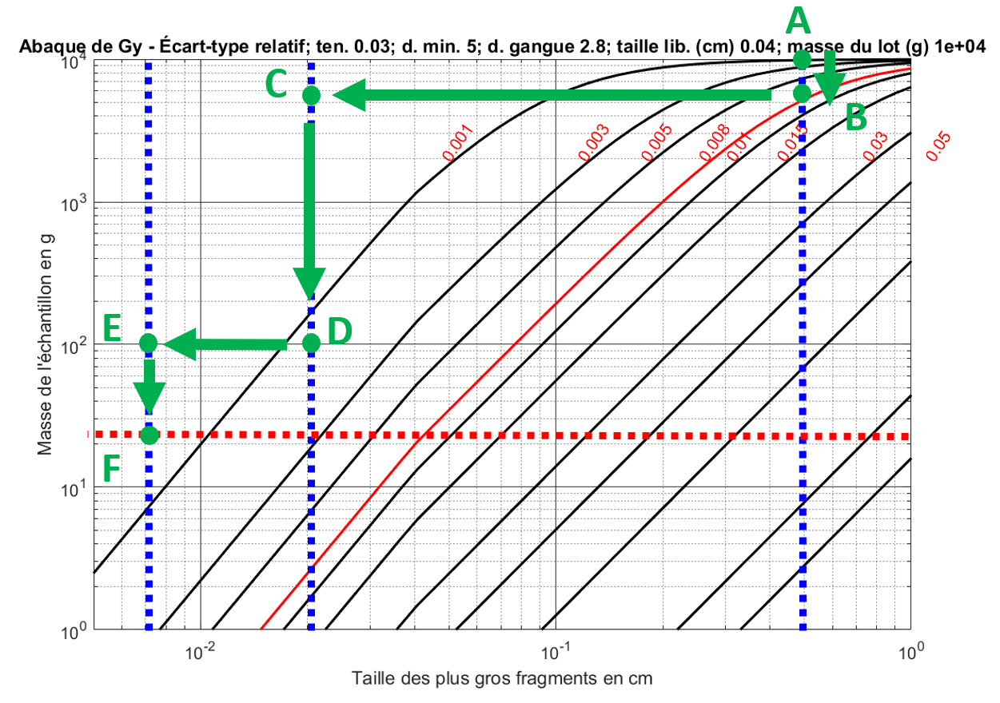
Les isocontours de l’abaque de Gy sont calculés à partir de la masse du lot initial (ici, \(M_L = M_{L,1} = 10\,000\) g), qui intervient dans le terme de correction \((1 - M_e/M_L)\). Ils ne sont donc rigoureusement exacts que pour la première étape d’échantillonnage. Aux étapes suivantes, le lot réel est plus petit (ici, 5300 g, puis 100 g), et la valeur exacte de \(s_r\) doit être recalculée avec la masse du lot propre à chaque étape.
L’abaque sert donc de visualisation rapide: il permet de représenter la procédure et de vérifier rapidement, à l’œil, si elle est adéquate. On ne peut toutefois pas y lire directement la valeur de \(s_r\) pour les étapes subséquentes — seul le calcul numérique permet de retrouver la valeur exacte de la variance relative totale.
On note que trois étapes d’échantillonnage sont effectuées. Ce sont uniquement ces étapes d’échantillonnage qui entraînent une erreur d’échantillonnage. Nous supposons qu’aucune perte de matériau n’a lieu lors des étapes de concassage ou de broyage. Ainsi, la variance relative totale peut être obtenue en additionnant les variances relatives associées à chacune des trois étapes d’échantillonnage :
\[s_r^2 = s_{r,1}^2 + s_{r,2}^2 + s_{r,3}^2\]
Exemple : Supposons que l’on souhaite un écart-type relatif inférieur à 0,008 (ligne rouge sur la Figure 3.12). Pour vérifier rapidement si la procédure est adéquate, sans effectuer le calcul complet, il suffit de s’assurer que les points B, D et F (correspondant aux étapes d’échantillonnage) se situent tous au-dessus de la courbe rouge, et qu’au plus un seul point s’en approche. C’est le cas dans cet exemple, ce qui permet de valider la procédure. Cette règle visuelle découle directement de l’additivité des variances. Un point situé au-dessus de la courbe rouge correspond à une étape dont la variance est inférieure à la cible (\(s_{r,i} < 0{,}008\)) : plus le point est haut, plus la variance de l’étape est faible. Mais comme les trois variances s’additionnent, on ne peut pas se permettre que les trois étapes soient simultanément proches de la courbe : trois contributions égales à \(0{,}008\) donneraient un écart-type total de \(\sqrt{3 \times 0{,}008^2} \approx 0{,}014\), bien au-dessus de la cible. En exigeant que les trois points soient au-dessus de la courbe et qu’au plus un seul la frôle, on garantit que la somme des variances reste sous la cible, sans avoir à faire le calcul.
Calcul de l’erreur d’échantillonnage global (\(s_r\)) de l’exemple
Données : \[\begin{aligned} a_L &= 0{,}03 \\ f &= 0{,}5 \\ g &= 0{,}25 \\ \delta_a &= 5 \ \text{g/cm}^3 \\ \delta_g &= 2{,}8 \ \text{g/cm}^3 \\ d_0 &= 0{,}04 \ \text{cm}\end{aligned}\]
Calcul de \(\mu\delta\) : \[\mu\delta = \frac{1 - a_L}{a_L} \cdot \left[ (1 - a_L) \cdot \delta_a + a_L \cdot \delta_g \right] = \frac{1 - 0{,}03}{0{,}03} \cdot \left[ (1 - 0{,}03) \cdot 5 + 0{,}03 \cdot 2{,}8 \right] = 159{,}5\]
Calcul de \(K\) : \[K = \mu\delta \cdot f \cdot g = 159{,}5 \cdot 0{,}5 \cdot 0{,}25 = 19{,}94 \ \text{g/cm}^3\]
Calcul des \(s_r\) pour chaque étape d’échantillonnage. Noter que la masse du lot (\(M_L\)), la masse d’échantillon (\(M_e\)), la taille (\(d\)) et le facteur de libération (\(l\)) varient en fonction de l’étape d’échantillonnage.
Étape B
\(M_e = 5300\) g, \(M_L = 10000\) g, \(d = 0{,}5\) cm
\(l = \left( \frac{0{,}04}{0{,}5} \right)^{0{,}5} = 0{,}2828\)
\(s_r^2 = \frac{19{,}94 \times 0{,}2828 \times 0{,}5^3}{5300} \left(1 - \frac{5300}{10000}\right) = 6{,}25 \times 10^{-5}\)
\(\Rightarrow s_r = 0{,}008\)Étape D
\(M_e = 100\) g, \(M_L = 5300\) g, \(d = 0{,}02\) cm
\(l = 1\)
\(s_r^2 = \frac{19{,}94 \times 1 \times 0{,}02^3}{100} \left(1 - \frac{100}{5300} \right) = 1{,}56 \times 10^{-6}\)
\(\Rightarrow s_r = 0{,}001\)Étape F
\(M_e = 25\) g, \(M_L = 100\) g, \(d = 0{,}007\) cm
\(l = 1\)
\(s_r^2 = \frac{19{,}94 \times 1 \times 0{,}007^3}{25} \left(1 - \frac{25}{100} \right) = 2{,}05 \times 10^{-7}\)
\(\Rightarrow s_r = 0{,}0005\)
Erreur globale :
\(s_{r,\text{global}}^2 = 6{,}25 \times 10^{-5} + 1{,}56 \times 10^{-6} + 2{,}05 \times 10^{-7} = 6{,}43 \times 10^{-5}\)
\(\Rightarrow s_{r,\text{global}} = 0{,}008\)
Le calcul complet montre clairement que l’échantillonnage à l’étape B introduit le plus de variance. L’erreur relative finale, \(s_{r,\text{global}}\), est pratiquement égale à celle de l’étape B, \(s_{r,1}\). À noter que, dans cet exemple, les valeurs apparaissent égales en raison des arrondis, ce qui n’est pas le cas en réalité.
🧮 Atelier interactif 3.2 — Procédures multistages. Calcul de l’erreur d’échantillonnage.
Cet atelier permet de visualiser les différentes étapes du calcul de l’erreur d’échantillonnage selon la théorie de Gy. Il peut également être utilisé comme calculateur pour valider vos résultats et vous accompagner dans la résolution des exercices.
La version web de ce document donne accès à la pleine interactivité de cet atelier.
3.3 Contrôle de qualité et assurance de qualité
Le contrôle de qualité et l’assurance qualité (QA/QC, Quality Assurance / Quality Control) regroupent les procédures qui vérifient toute la chaîne d’échantillonnage, du prélèvement à la validation des résultats. Elles garantissent que les teneurs obtenues sont fiables et peuvent appuyer une estimation des ressources ou une décision minière.
Bre-X est un bon rappel de l’importance du QA/QC. Dans ce projet, des échantillons de carottes avaient été enrichis avec de la poussière d’or, ce qui a complètement faussé l’estimation des ressources. Ce scandale a poussé plusieurs pays miniers à renforcer leurs règles de divulgation.
| Pays | Réglementation |
|---|---|
| Canada | Règlement NI 43-101 |
| Australie | JORC Code |
| Afrique du Sud | SAMREC |
| Royaume-Uni | IMM |
| États-Unis | SME |
Ces réglementations exigent que les données utilisées pour estimer les ressources soient appuyées par des procédures rigoureuses d’échantillonnage, de préparation, d’analyse et de validation. Le QA/QC permet donc de faire le lien entre les notions vues précédemment — biais, précision, justesse, traçabilité et erreur analytique — et leur application concrète dans un projet minier.
Dans un rapport NI 43-101, le QA/QC doit être présenté clairement. Il faut montrer comment les échantillons ont été suivis, préparés et vérifiés avant d’utiliser les résultats dans l’estimation. Le rapport doit notamment expliquer :
- les méthodes d’échantillonnage utilisées;
- les procédures de préparation et d’entreposage;
- la traçabilité des échantillons;
- les mesures de sécurité et de protection des accès;
- les contrôles utilisés pour détecter les erreurs, les contaminations, les dérives analytiques ou d’éventuelles irrégularités;
- l’utilisation de blancs, de standards, de duplicatas et de réanalyses.
Définitions
Le contrôle de qualité repose sur l’insertion d’échantillons de contrôle dans la séquence normale d’échantillons envoyés au laboratoire. Ces contrôles servent à vérifier différentes sources d’erreur : la précision, la justesse, la contamination et la reproductibilité des résultats.
On distingue généralement quatre types principaux de contrôles QA/QC.
Analyse par un tiers
Une partie du rejet ou de la pulpe est envoyée à un second laboratoire pour une analyse indépendante. Cette comparaison permet de vérifier si les résultats du laboratoire principal sont cohérents avec ceux d’un autre laboratoire. Elle sert surtout à détecter un problème de justesse, mais peut aussi révéler un problème de précision ou de méthode analytique.
Duplicatas
Un duplicata consiste à refaire une analyse à partir du même matériau, par exemple à partir du rejet, de la pulpe ou d’un second sous-échantillon. Lorsqu’il est analysé par le même laboratoire, il permet surtout d’évaluer la précision, c’est-à-dire la capacité du processus analytique à reproduire un résultat similaire. Lorsqu’il est envoyé à un autre laboratoire, on parle plutôt de duplicata externe, ainsi une analyse par un tiers.
Blancs
Un blanc est un matériau stérile, connu pour ne contenir aucune trace de l’élément analysé, que l’on insère dans la séquence d’échantillons afin de détecter une contamination. Sa teneur devant être nulle, toute valeur anormalement élevée trahit un apport de matière étranger — le plus souvent un résidu laissé par un échantillon riche traité juste avant, dans le concasseur, le broyeur ou l’appareil d’analyse. On distingue le blanc grossier, introduit avant la préparation pour tester la contamination lors du concassage et du broyage, et le blanc fin (ou de pulpe), inséré au moment de l’analyse pour isoler la contamination survenue en laboratoire.
Échantillons de référence, ou standards
Un standard est un échantillon préparé à l’avance, dont on connaît déjà la teneur. On l’envoie au laboratoire avec les autres échantillons, sans qu’il serve à estimer le gisement. Il sert plutôt à vérifier si le laboratoire retrouve la valeur qu’il devrait trouver. Si le résultat est trop loin de la valeur attendue, il peut y avoir un problème dans l’analyse.
Outils statistiques pour le contrôle qualité
Selon Abzalov (2011), la statistique la plus utile est le coefficient de variation (CV), défini par :
\[\text{CV} = \frac{s}{m}\]
Pour une paire de duplicatas (\(z_1, z_2\)), l’écart-type expérimental est \(s = \frac{|z_1 - z_2|}{\sqrt{2}}\) et la moyenne est \(m = \frac{z_1 + z_2}{2}\). En substituant, on obtient :
\[\text{CV} = \frac{\sqrt{2} \, |z_1 - z_2|}{z_1 + z_2}\]
D’autres mesures équivalentes existent, telles que le HARD (\(\frac{|z_1 - z_2|}{z_1 + z_2}\)) ou le AMPD (\(\frac{2 |z_1 - z_2|}{z_1 + z_2} \times 100\%\)). Comme ces statistiques sont proportionnelles, l’usage direct du CV est recommandé.
Exemple synthétique de résultats QA/QC
Visualisation des Blancs
La manière traditionnelle de présenter les résultats des blancs consiste à les représenter sous forme de série temporelle. Chaque point correspond alors à un blanc analysé, placé dans l’ordre d’insertion de la séquence d’échantillons. Cette représentation permet de repérer rapidement des valeurs anormales, mais aussi d’identifier si les dépassements sont isolés ou s’ils se répètent dans une portion de la séquence.
Pour interpréter un blanc, on compare souvent le résultat à la limite de détection de l’appareil, notée LD. Si la valeur mesurée est inférieure à 3 × LD, le résultat est généralement acceptable. Entre 3 × LD et 5 × LD, il peut y avoir une petite anomalie à surveiller. Lorsque la valeur dépasse 5 × LD, la possibilité d’une contamination devient plus sérieuse. Au-delà de 10 × LD, le résultat est suspect et il faut vérifier la séquence d’analyse.
L’atelier interactif ci-dessous met cette logique en pratique : la limite de détection, le niveau de bruit analytique, le pourcentage de contamination et le nombre d’échantillons peuvent y être ajustés pour voir comment ils influencent la distribution des blancs, le nombre de dépassements et l’interprétation globale de la qualité analytique.
🧮 Atelier interactif 3.3 — Blancs et détection de contamination
Ajustez la limite de détection, le bruit analytique, le taux de contamination et le nombre d’échantillons, puis observez la série temporelle des blancs et le nombre de dépassements des seuils (\(3\times\), \(5\times\), \(10\times\) LD).
Cet atelier est pleinement interactif dans la version web de ce document.
À retenir : un blanc qui dépasse les seuils signale une contamination introduite par la chaîne de préparation ou d’analyse, et non par le gisement lui-même. La forme de la série aide au diagnostic : des dépassements isolés évoquent un incident ponctuel, tandis que des dépassements groupés trahissent un problème systématique sur une portion de la séquence.
Échantillons de référence
Les standards sont des échantillons dont la teneur est déjà connue. On les insère dans la séquence d’analyse pour vérifier si le laboratoire retrouve bien la valeur attendue. Contrairement aux blancs, on ne s’attend donc pas à une teneur nulle. On s’attend plutôt à retrouver une valeur précise, avec une certaine tolérance autour de cette valeur.
Les résultats des standards sont souvent présentés dans un graphique, selon l’ordre où ils ont été analysés. Chaque point représente un standard. La ligne centrale correspond à la teneur attendue, et les lignes autour montrent les limites de contrôle, généralement à \(\pm 1\sigma\), \(\pm 2\sigma\) et \(\pm 3\sigma\).
Si les points restent près de la valeur attendue, le laboratoire semble bien mesurer le standard. Si un résultat dépasse \(\pm 2\sigma\), on commence à porter attention. Si un résultat dépasse \(\pm 3\sigma\), il faut généralement vérifier ce qui s’est passé dans la séquence d’analyse.
Au-delà des points isolés très éloignés, il faut regarder la forme de la série. Si plusieurs résultats sont toujours un peu trop élevés, ou toujours un peu trop faibles, cela peut indiquer un biais. Si les résultats se déplacent lentement dans une direction, on peut soupçonner une dérive du laboratoire. En principe, les résultats des standards devraient varier autour de la valeur attendue, sans tendance claire dans le temps.
Ainsi, si plusieurs standards consécutifs sont mesurés au-dessus de la valeur attendue, cela peut indiquer que le laboratoire surestime systématiquement les teneurs. Comme la distribution attendue des standards est connue, il est possible de calculer la probabilité qu’une telle séquence se produise simplement par hasard. L’atelier interactif ci-dessous permet de calculer cette probabilité en faisant varier la moyenne attendue, l’écart-type certifié, le nombre d’échantillons, le biais et la dérive, afin de voir comment ces paramètres influencent la distribution des résultats, les dépassements des seuils de contrôle et l’interprétation globale de la qualité analytique.
🧮 Atelier interactif 3.4 — Standards : justesse et dérive analytique
Faites varier la teneur certifiée, l’écart-type, le biais et la dérive du laboratoire, puis observez la série temporelle des standards par rapport aux seuils de contrôle (\(\pm 1\sigma\), \(\pm 2\sigma\), \(\pm 3\sigma\)) et la probabilité d’obtenir une telle séquence par hasard.
Cet atelier est pleinement interactif dans la version web de ce document.
À retenir : les standards mesurent la justesse. Des écarts isolés au-delà de \(\pm 2\sigma\) restent attendus de temps à autre, mais des dépassements répétés du même côté de la valeur certifiée — ou une tendance progressive — trahissent un biais ou une dérive du laboratoire, bien plus préoccupants qu’un écart ponctuel.
Duplicatas
La manière traditionnelle de présenter les duplicatas consiste d’abord à tracer un nuage de points où chaque paire est représentée par deux valeurs : l’échantillon original sur un axe et son duplicata sur l’autre. Lorsque les résultats sont très reproductibles, les points se placent près de la droite 1:1. Plus les points s’éloignent de cette droite, plus l’écart entre l’original et le duplicata est important.
Un deuxième graphique permet de visualiser la différence relative entre les deux analyses. Cette différence est souvent exprimée en pourcentage par rapport à la moyenne de la paire. Elle permet d’identifier les paires problématiques, par exemple celles qui dépassent le seuil de 10 %. Des écarts élevés peuvent indiquer une mauvaise homogénéisation, un sous-échantillonnage insuffisant, une contamination, une erreur analytique ou une forte hétérogénéité du matériau.
L’indicateur HARD (Half Absolute Relative Difference) est souvent utilisé pour comparer les duplicatas. Il donne une mesure de l’écart entre deux résultats, par rapport à leur moyenne. Plus la valeur de HARD est faible, plus les deux analyses sont proches. On peut ensuite représenter les valeurs de HARD sous forme de courbe cumulative. Cette courbe permet de voir quelle proportion des duplicatas respecte un seuil donné. Par exemple, on peut vérifier si 90 % des paires ont un HARD inférieur à 10 %.
Le seuil retenu dépend toutefois du type de duplicata. La tolérance de 10 % vise les duplicatas de pulpe, les plus reproductibles; on accepte généralement un écart plus élevé pour les duplicatas grossiers, de l’ordre de 20 %, et pour les duplicatas de terrain, de l’ordre de 25 %, car l’hétérogénéité du matériau y est plus grande. Les paires dont les deux valeurs sont très proches de la limite de détection sont par ailleurs souvent écartées de l’analyse, car l’écart relatif y devient peu significatif.
La médiane des teneurs, le coefficient de variation et le nombre de paires de duplicatas peuvent être ajustés dans l’atelier interactif ci-dessous, pour observer comment la dispersion analytique influence le nuage de points, les écarts relatifs, la courbe HARD et les indicateurs synthétiques comme le \(R^2\), le HARD(90) et le coefficient de variation moyen.
🧮 Atelier interactif 3.5 — Duplicatas : précision analytique
Réglez la médiane des teneurs, le coefficient de variation et le nombre de paires, puis comparez le nuage original-duplicata à la droite 1:1, les écarts relatifs et la courbe cumulative du HARD.
Cet atelier est pleinement interactif dans la version web de ce document.
À retenir : les duplicatas mesurent la précision. Un nuage de points serré le long de la droite 1:1 et une courbe HARD montrant au moins 90 % des paires sous 10 % indiquent une bonne reproductibilité; les paires qui s’en écartent signalent une hétérogénéité du matériau, un sous-échantillonnage insuffisant ou une erreur analytique.
Exemples réels de protocoles QA/QC
Les protocoles QA/QC décrits dans les rapports techniques NI 43-101 montrent comment les blancs, les standards, les duplicatas et la traçabilité s’appliquent dans des projets miniers réels. Pour respecter les droits d’auteur, les graphiques originaux ne sont pas reproduits ici : le lecteur est invité à consulter les rapports sur SEDAR+ pour visualiser les résultats détaillés. Les deux cas ci-dessous en sont décrits en mots.
Exemple 1 : Windfall — Osisko
Le rapport technique du projet Windfall décrit un protocole QA/QC structuré autour de l’insertion systématique d’échantillons de contrôle dans la séquence d’analyse. Les blancs, constitués de gravier calcaire stérile, servent à détecter une contamination lors de la préparation ou de l’analyse. Les standards (matériaux de référence certifiés) sont insérés environ un tous les 20 échantillons pour vérifier la justesse et la précision; surtout, leur identifiant est effacé avant l’insertion, précisément pour que le laboratoire ne puisse pas les reconnaître et les traiter différemment. La traçabilité repose sur des étiquettes numérotées en triplicata (sac d’échantillon, boîte de carottes, carnet de terrain), qui permettent de suivre chaque échantillon tout au long de la chaîne.
L’ampleur du programme — de l’ordre de 96 858 blancs, 87 029 standards et 5 922 duplicatas — illustre le volume de contrôle nécessaire dans un projet d’exploration avancé. On notera toutefois que des blancs de gravier calcaire, visuellement distincts de la roche, restent en principe repérables par le laboratoire.
Exemple 2 : Mine Dumont — Royal Nickel
Le rapport de la propriété Dumont présente un protocole plus large, couvrant aussi la sécurité et la préparation. Les accès à la carothèque sont protégés par un système d’alarme zoné, les sacs sont scellés dès la récolte, et les laboratoires sont certifiés ISO 9001:2000. Un blanc de sable (0 à 80 ppm de nickel) est inséré tous les 25 échantillons; la préparation comprend un concassage à 2 mm (70 % passant), la sélection d’une fraction de 100 g et une pulvérisation à 106 µm. Des duplicatas (quarts de carottes) sont envoyés à la même fréquence, et quatre matériaux de référence certifiés vérifient la justesse.
Décrits en mots, les résultats se lisent ainsi. Les blancs et les duplicatas ne révèlent rien d’anormal — mais ce constat rassurant est à nuancer : un blanc de sable et un duplicata en quart de carotte sont tous deux facilement identifiables par le laboratoire, si bien que ces deux contrôles ne testent pas vraiment la procédure à l’aveugle. Le signal le plus important vient des standards : l’un d’eux (Standard 1) présente un biais marqué, et pour les deux laboratoires — exactement le type d’écart systématique que le QA/QC doit détecter avant que les données ne servent à estimer les ressources. Des contrôles trop reconnaissables perdent ainsi de leur valeur, tandis qu’un standard bien suivi peut révéler un biais réel.
3.4 Calcul de la densité théorique
Certaines mines calculent la densité du minerai directement à partir des analyses chimiques. La densité est une variable importante, car elle détermine la quantité de métal contenue dans un volume donné : si la densité varie, le tonnage varie aussi. Elle intervient donc dans les estimations de ressources, les calculs de dilution et les bilans économiques.
Deux approches existent. La première est une formule empirique obtenue par régression : à partir d’un jeu d’échantillons dont la densité a été mesurée physiquement, on ajuste une relation entre la densité et les teneurs chimiques. Elle est rapide à appliquer, mais purement statistique : elle n’est valable que sur la plage de teneurs ayant servi à la calibration, d’autant que la relation densité-teneur n’est pas linéaire (voir plus bas). La seconde est un calcul fondé sur la minéralogie déduite de l’analyse chimique : on reconstruit les proportions de minéraux à partir des teneurs, puis on en déduit la densité. C’est cette approche, physiquement fondée, que nous développons ici.
Principe
Chaque élément mesuré par l’analyse chimique provient d’un ou de plusieurs minéraux de composition connue. En partant des teneurs, on reconstitue la proportion massique de chaque minéral, puis on additionne les volumes qu’ils occupent. Pour une masse donnée, un minéral de proportion \(t_i\) et de densité \(d_i\) occupe un volume \(t_i/d_i\), et la densité théorique vaut :
\[ d_{\text{moy}} = \frac{1}{\sum_{i=1}^{n} \dfrac{t_i}{d_i}} \]
La densité ne se moyenne donc pas arithmétiquement : ce sont les volumes, et non les densités, qui s’additionnent.
Cas d’un seul minéral porteur
Prenons un gisement de cuivre où tout le cuivre est contenu dans la chalcopyrite (densité 4,2; 35 % Cu), seul sulfure présent, la gangue ayant une densité voisine de 3. Pour une roche à 1 % Cu, la proportion de chalcopyrite est \(1/0{,}35 = 2{,}86\,\%\). Dans 100 g de roche, ces 2,86 g de chalcopyrite occupent \(2{,}86/4{,}2 = 0{,}68\) cm³, et les 97,14 g de gangue \(97{,}14/3 = 32{,}38\) cm³, soit un volume total de 33,06 cm³ et une densité de \(100/33{,}06 = 3{,}02\) g/cm³.
Pour une roche cinq fois plus riche, à 5 % Cu, on obtient \(5/0{,}35 = 14{,}29\,\%\) de chalcopyrite, un volume total de 31,97 cm³ et une densité de \(100/31{,}97 = 3{,}13\) g/cm³.
Une relation non linéaire
En multipliant la teneur en cuivre par cinq (de 1 % à 5 %), la densité ne passe que de 3,02 à 3,13 g/cm³ : elle ne varie donc pas linéairement avec la teneur. Cela tient à la forme de la relation — c’est l’inverse de la densité, \(1/d = \sum_i t_i/d_i\), qui se combine linéairement avec les proportions massiques, tandis que la densité elle-même en est une fonction non linéaire. C’est aussi pour cette raison qu’une formule empirique reliant directement densité et teneur ne reste fiable que sur une plage de teneurs restreinte.
Cas de plusieurs minéraux : le système \(\mathbf{A}\mathbf{x} = \mathbf{b}\)
Avec un seul sulfure, le raisonnement est direct. Avec deux, on peut encore procéder par substitution : la teneur en cuivre donne la proportion de chalcopyrite (\(\%\text{Cu} \to \%\text{chalcopyrite}\)), puis le soufre restant, une fois retiré celui de la chalcopyrite, donne la proportion de pyrite (\(\%\text{S} - \%\text{S}_{\text{chalcopyrite}} \to \%\text{pyrite}\)) — mais seulement si l’on suppose que tout le soufre provient de la pyrite et de la chalcopyrite.
Dès que plusieurs minéraux partagent les mêmes éléments, cette substitution ne suffit plus et l’on écrit un système d’équations linéaires :
\[ \mathbf{A}\mathbf{x} = \mathbf{b} \]
Chaque ligne du système est un bilan de masse pour un élément : la teneur mesurée de l’élément \(i\) dans la roche est la somme, sur tous les minéraux, de sa teneur dans chaque minéral pondérée par la proportion de ce minéral. Concrètement :
- \(A_{ij}\) est la teneur de l’élément \(i\) dans le minéral \(j\), connue par la formule chimique du minéral;
- \(b_i\) est la teneur de l’élément \(i\) dans la roche, connue par l’analyse chimique;
- \(x_j\) est la proportion massique du minéral \(j\), l’inconnue à déterminer.
À ces bilans par élément s’ajoute l’équation de fermeture
\[ \sum_{j} x_j = 1 \]
qui traduit un dernier bilan de masse : les proportions doivent totaliser 100 %. C’est elle qui ferme le système et permet de résoudre la dernière inconnue, la gangue. Pour \(n\) minéraux, il faut donc \(n\) équations, soit \((n-1)\) bilans d’éléments plus la fermeture. Pour limiter le nombre d’inconnues, on n’isole que les minéraux dont la densité diffère nettement de celle de la gangue; les autres sont regroupés dans la gangue.
Exemple : gisement Cu-Zn
Considérons un gisement où le cuivre se répartit entre la chalcopyrite (CuFeS₂) et la chalcocite (Cu₂S), le zinc dans la sphalérite (ZnS), avec de la pyrite (FeS₂) et une gangue contenant en moyenne 2 % de fer mais pas de soufre. Les densités sont : chalcopyrite 4,1; chalcocite 5,6; sphalérite 4,1; pyrite 5,0; gangue 2,9. L’analyse donne 6 % Cu, 9 % Zn, 10 % S et 5 % Fe.
En dressant un bilan pour chaque élément (Cu, Zn, S, Fe) et en ajoutant la fermeture, le système s’écrit :
\[ \begin{array}{r} \text{Cu} \\ \text{Zn} \\ \text{S} \\ \text{Fe} \\ \textstyle\sum \end{array} \begin{bmatrix} 0{,}35 & 0{,}80 & 0 & 0 & 0 \\ 0 & 0 & 0{,}67 & 0 & 0 \\ 0{,}35 & 0{,}20 & 0{,}33 & 0{,}53 & 0 \\ 0{,}30 & 0 & 0 & 0{,}47 & 0{,}02 \\ 1 & 1 & 1 & 1 & 1 \end{bmatrix} \begin{bmatrix} x_{\text{cp}} \\ x_{\text{cc}} \\ x_{\text{sp}} \\ x_{\text{py}} \\ x_{\text{g}} \end{bmatrix} = \begin{bmatrix} 0{,}06 \\ 0{,}09 \\ 0{,}10 \\ 0{,}05 \\ 1 \end{bmatrix} \]
Chaque colonne correspond à un minéral, chaque ligne à un élément (la dernière étant la fermeture). La résolution du système donne les proportions massiques :
| Minéral | Proportion | Densité (g/cm³) | Volume pour 100 g (cm³) |
|---|---|---|---|
| Chalcopyrite | 0 % | 4{,}1 | 0 |
| Chalcocite | 7{,}7 % | 5{,}6 | 1{,}38 |
| Sphalérite | 13{,}43 % | 4{,}1 | 3{,}28 |
| Pyrite | 7{,}9 % | 5{,}0 | 1{,}58 |
| Gangue | 71{,}4 % | 2{,}9 | 24{,}62 |
Ici, le système explique entièrement l’analyse sans chalcopyrite (\(x_{\text{cp}} = 0\)) : tout le cuivre est attribué à la chalcocite. Le volume total est de 30,86 cm³, d’où une densité théorique de \(100/30{,}86 = 3{,}24\) g/cm³.
Effet de la porosité
La densité théorique représente celle de la phase solide. Si la roche présente une porosité \(n\) (en fraction), une partie du volume total est occupée par des vides et la densité sèche totale devient :
\[ \rho_{\text{réelle}} = \rho_{\text{théorique}} \, (1 - n) \tag{3.7}\]
Par exemple, une roche de densité solide 3,24 g/cm³ et de porosité 5 % a une densité sèche d’environ \(3{,}24 \times (1 - 0{,}05) = 3{,}08\) g/cm³. L’effet peut être important dans les roches altérées, fracturées ou poreuses.
🧮 Atelier interactif 3.6 — Densité théorique par résolution de \(\mathbf{A}\mathbf{x} = \mathbf{b}\)
Ce calculateur construit et résout le système \(\mathbf{A}\mathbf{x} = \mathbf{b}\) présenté ci-dessus. La démarche suit quatre étapes : (1) cochez les minéraux présents; (2) choisissez les éléments à inclure dans le système; (3) la matrice \(\mathbf{A}\) et le vecteur \(\mathbf{b}\) se forment — les compositions sont pré-remplies à partir des formules mais restent éditables, et vous entrez les teneurs chimiques mesurées dans \(\mathbf{b}\) (la ligne de fermeture \(\sum x = 1\), qui garantit 100 % de matière et détermine la gangue, est ajoutée automatiquement); (4) cliquez sur Calculer pour obtenir les proportions massiques \(\mathbf{x}\) des minéraux et la densité de la roche. Si la matrice n’est pas inversible, un message le signale; si des proportions sont négatives, le résultat s’affiche quand même — c’est le signe d’une combinaison minéraux/teneurs incohérente. Quelques exemples types sont accessibles d’un clic.
L’objectif est de montrer que la densité dépend à la fois des teneurs chimiques et des hypothèses minéralogiques utilisées pour les interpréter : deux échantillons aux analyses semblables peuvent conduire à des densités différentes si la minéralogie, la gangue ou la porosité diffèrent.
Cet atelier est pleinement interactif dans la version web de ce document.